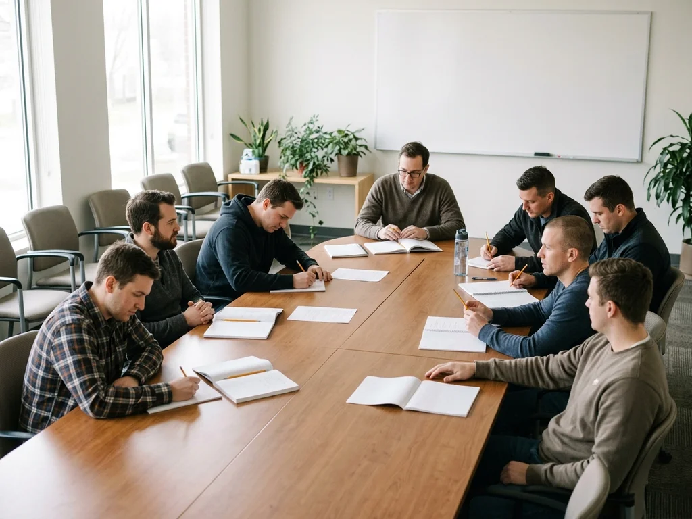
public/learning-scenes/numbers-counting/numbers-counting-1-eight-students.webp
Photorealistic classroom photography. A bright modern seminar room with exactly 8 modest adult male university students seated around a conference table engaged in study, notebooks and pencils on the table. Clear wide view where all 8 students are distinctly countable. Natural window lighting. Strictly adult learners. No women. Strictly no readable text, words, letters, numerals, posters or watermarks. Aspect ratio 4:3.
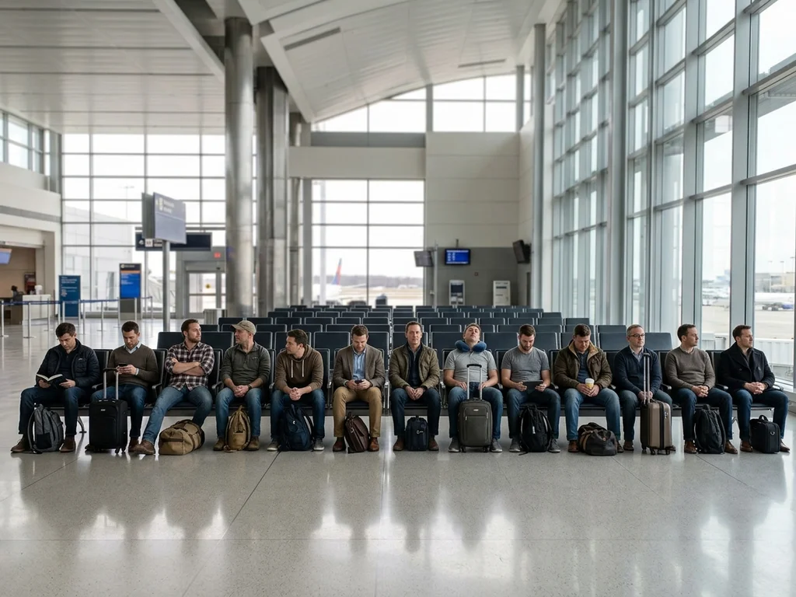
public/learning-scenes/numbers-counting/numbers-counting-1-thirteen-people.webp
Photorealistic public transit photography. A bright, spacious modern airport departure gate lounge with exactly 13 modest adult male passengers seated along a row of airport seats waiting for their flight, each with small carry-on luggage. Wide unobstructed angle where all 13 individuals can be counted clearly. Daytime natural lighting. No women. Strictly no readable signs, text, flight numbers or watermarks. Aspect ratio 4:3.
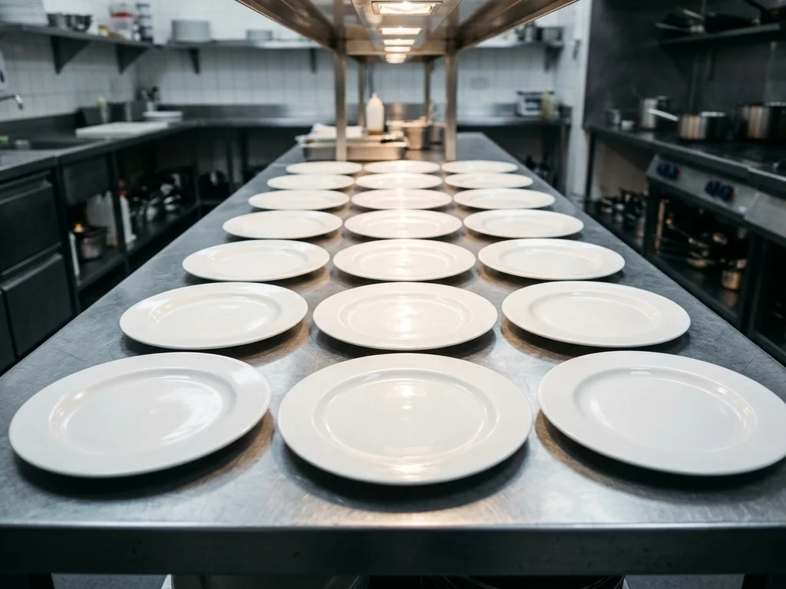
public/learning-scenes/numbers-counting/numbers-counting-2-eighteen-plates.webp
Photorealistic culinary photography. A stainless steel restaurant plating counter showing exactly eighteen identical round white ceramic dinner plates neatly arranged in a clean grid of three rows of six plates each, ready for dinner service. Clean, bright kitchen lighting. Strictly human-free composition. Strictly no text, labels, or watermarks. Aspect ratio 4:3.
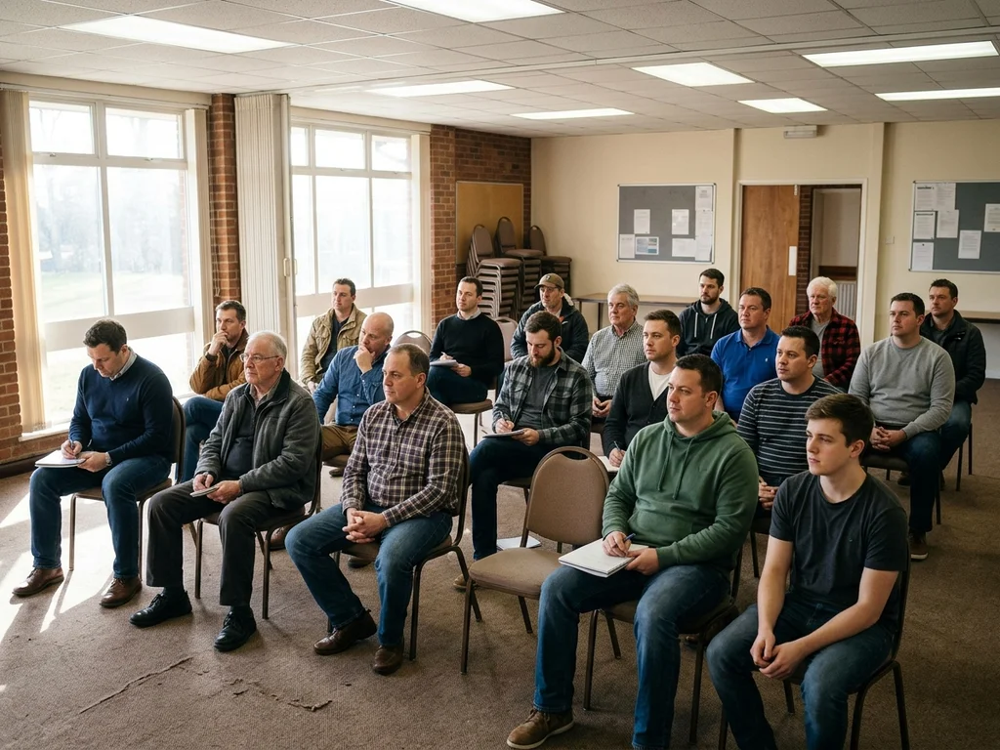
public/learning-scenes/numbers-counting/numbers-counting-2-nineteen-people.webp
Photorealistic professional photography. A sunlit community seminar room with exactly nineteen modest adult male attendees seated in rows of chairs listening to a presentation, notebooks in laps. Wide framing showing all 19 participants clearly countable. No women. Strictly no readable slides, whiteboard writing, text or watermarks. Aspect ratio 4:3.
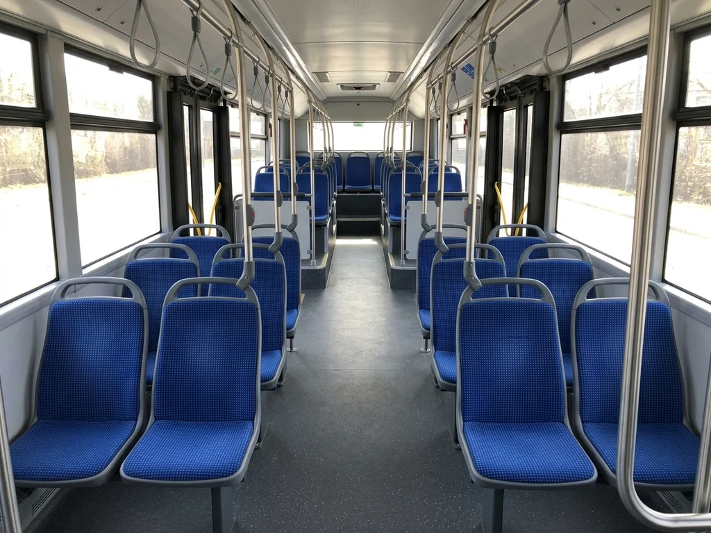
public/learning-scenes/numbers-counting/numbers-counting-2-twenty-seats.webp
Photorealistic interior transit photography. Looking down the central aisle of a clean, modern city bus showing empty passenger seats. Exactly ten rows with two seats per row, showing exactly twenty passenger seats total with neat blue upholstery. Bright natural daylight through bus windows. Strictly human-free composition. Strictly no route signs, advertising, text or watermarks. Aspect ratio 4:3.
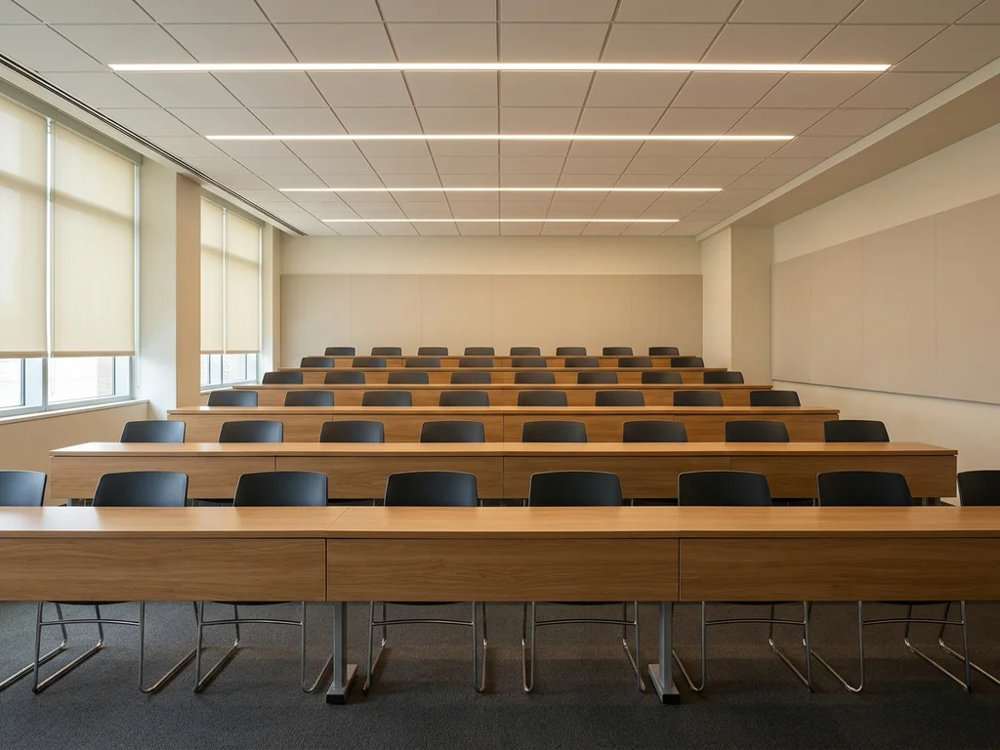
public/learning-scenes/numbers-counting/numbers-counting-2-thirty-students.webp
Photorealistic lecture hall photography. A clean modern university classroom viewed from the front showing five tidy rows of desks with exactly six study chairs per row, making thirty student places in total, arranged in a neat grid. Warm overhead lighting, tidy educational atmosphere. Strictly human-free composition. Strictly no blackboard writing, posters, text or watermarks. Aspect ratio 4:3.
public/learning-scenes/numbers-counting/numbers-counting-2-forty-pages.webp
Photorealistic educational still life. A thick, high-quality open notebook or art sketchbook resting on a solid walnut desk, its binding clearly showing approximately forty textured creamy paper pages neatly bound together, with a wooden pen beside it. Warm morning study light. Strictly human-free composition. Strictly blank pages with no text, letters, numerals or drawings. Aspect ratio 4:3.
public/learning-scenes/numbers-counting/numbers-counting-2-fifty-pounds.webp
Photorealistic still life photography. An open dark leather gentleman's wallet resting flat on an oak table, revealing paper currency banknotes neatly inside, beside a pair of reading glasses and house keys. Elegant, dignified adult setting. Strictly human-free composition. Artistically stylized banknotes with zero readable numerals, letters or text. Aspect ratio 4:3.
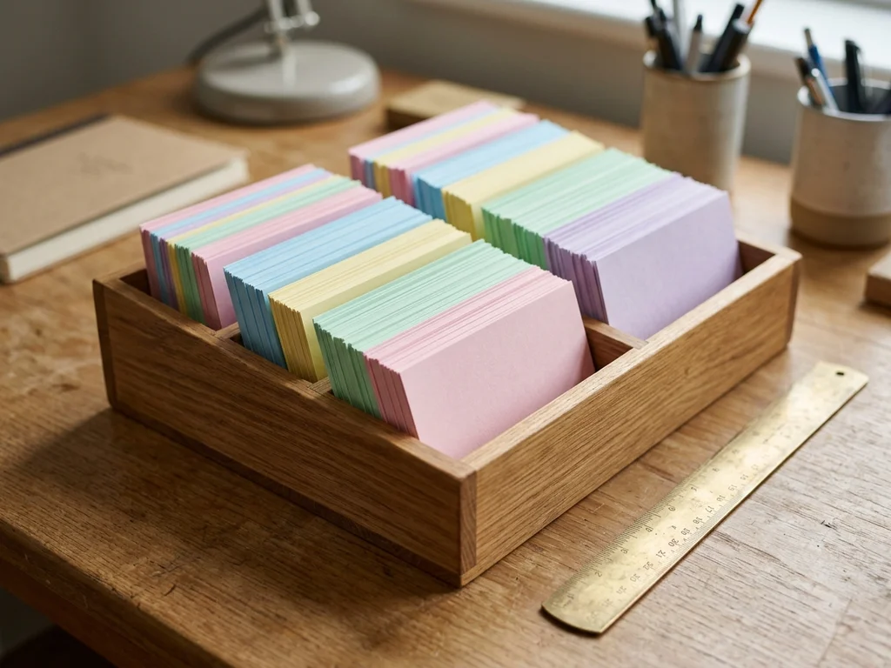
public/learning-scenes/numbers-counting/numbers-counting-2-eighty-cards.webp
Photorealistic still life photography. A craft wooden desktop organizer box filled with approximately eighty clean pastel revision flashcards arranged neatly upright in tidy partitioned sections, with a brass ruler beside the box on a desk. Tidy study environment. Strictly human-free composition. Blank flashcards with strictly no text, writing, or watermarks. Aspect ratio 4:3.
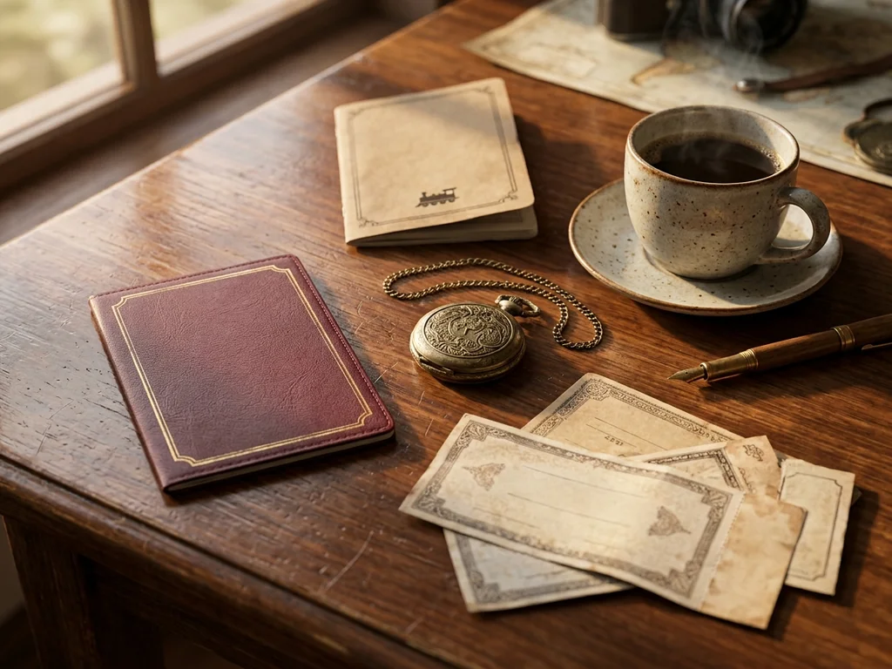
public/learning-scenes/numbers-counting/numbers-counting-2-ninety-pounds.webp
Photorealistic travel still life. A polished wooden travel planning desk with a blank passport cover, a classic brass pocket watch, a train timetable booklet with blank covers, a ceramic coffee cup, and paper travel vouchers. Warm atmospheric lighting. Strictly human-free composition. Strictly no readable words, numbers, or watermarks. Aspect ratio 4:3.
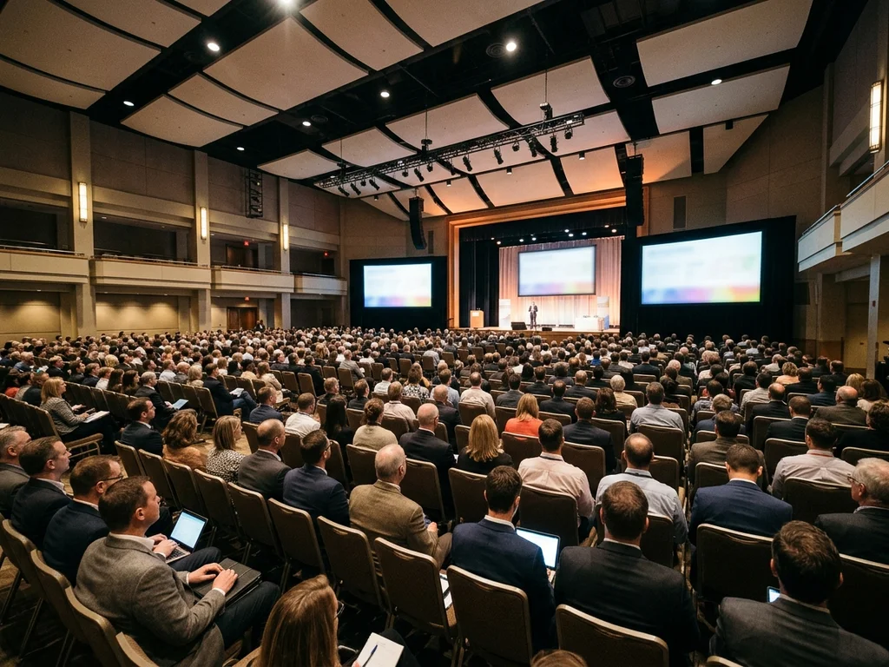
public/learning-scenes/numbers-counting/numbers-counting-2-one-hundred-people.webp
Photorealistic wide-angle photography. A grand conference hall filled with a large audience of approximately one hundred adult attendees seated in orderly rows attending a professional keynote, viewed from an elevated rear perspective. Dignified conference lighting. Modest adult attendees. Strictly no readable slides, signs, banners or watermarks. Aspect ratio 4:3.
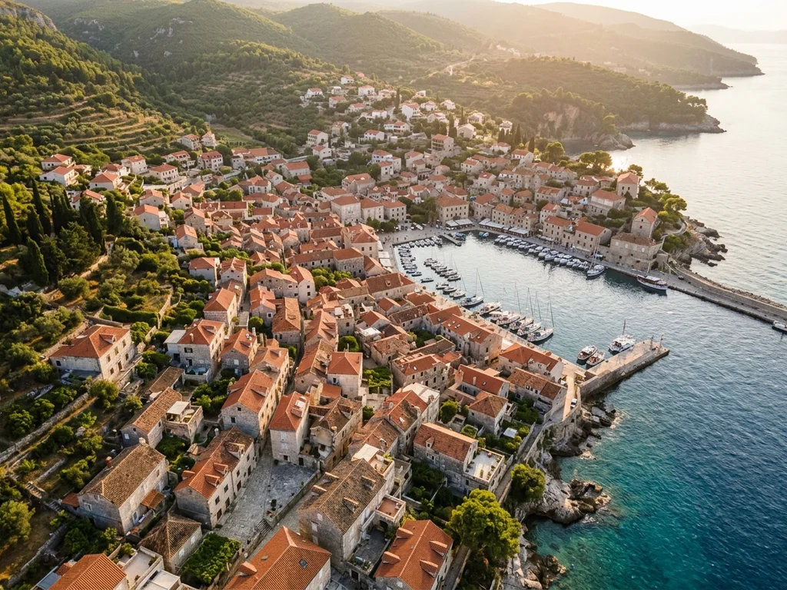
public/learning-scenes/numbers-counting/numbers-counting-2-one-thousand-homes.webp
Photorealistic high-angle aerial landscape photography of a picturesque historic coastal European town nestled between green hills and blue sea, displaying an expansive tapestry of hundreds of red-tiled residential houses and stone cottages stretching toward the harbor. Golden hour sun. Strictly human-free focus. Strictly no road signs, text, or watermarks. Aspect ratio 4:3.
public/learning-scenes/numbers-counting/numbers-counting-2-one-million-people.webp
Photorealistic panoramic cityscape photography. An expansive skyline of a massive modern metropolis with countless illuminated glass skyscrapers, transit bridges, and glowing thoroughfares extending to the horizon at twilight, capturing the scale of a million-person city. Atmospheric evening glow. Strictly human-free composition. Strictly no billboard advertisements, logos, text or watermarks. Aspect ratio 4:3.
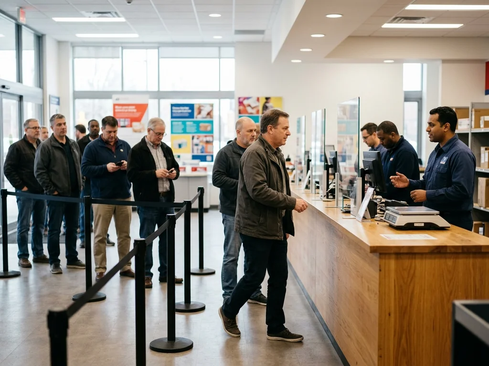
public/learning-scenes/numbers-counting/numbers-counting-3-first-in-line.webp
Photorealistic customer service photography. A customer service reception counter in a bright modern post office, showing a queue of modest adult men standing behind a stanchion guide rope. The very first adult man in line is stepping forward directly to the wooden counter to be served. Professional ambient light. No women. Strictly no readable signs, posters, text or watermarks. Aspect ratio 4:3.
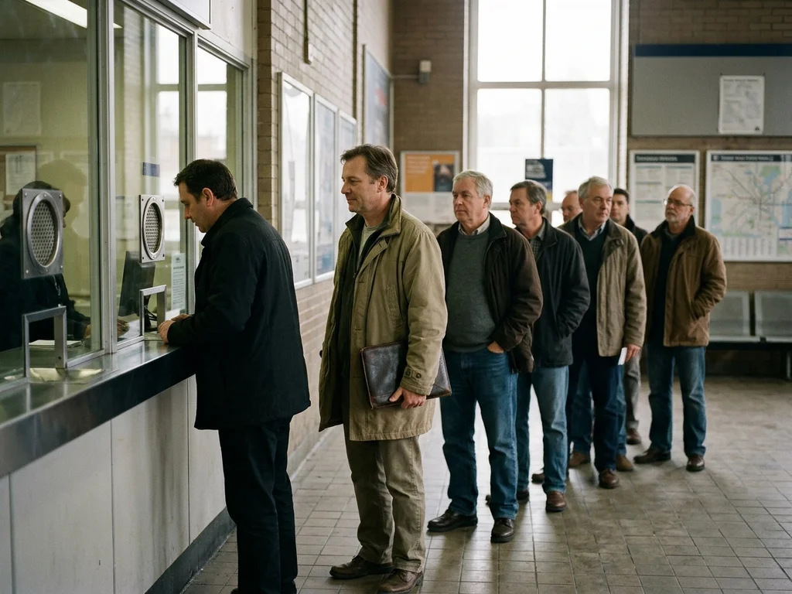
public/learning-scenes/numbers-counting/numbers-counting-3-second-in-line.webp
Photorealistic queuing photography. An orderly queue of modest adult men waiting at a train ticket office. The second man in line, dressed in a casual trench coat and holding a leather folder, is waiting patiently behind the first person who is being served at the glass counter. Soft natural lighting. No women. Strictly no readable signage, text, or watermarks. Aspect ratio 4:3.
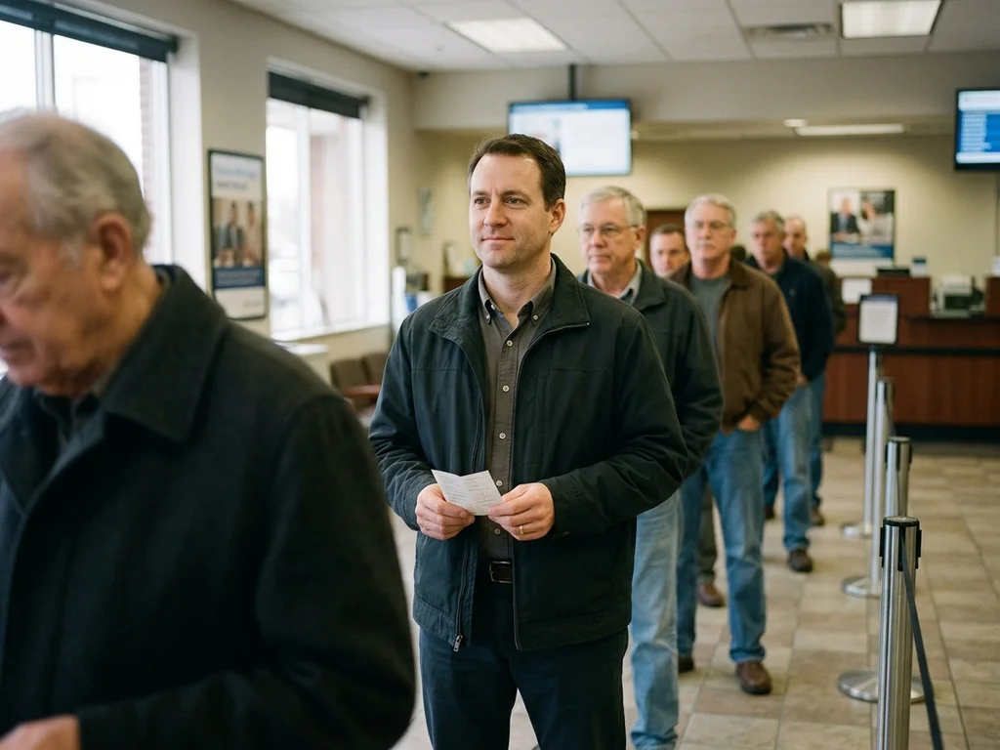
public/learning-scenes/numbers-counting/numbers-counting-3-third-in-line.webp
Photorealistic public service photography. An orderly line of modest adult men standing patiently inside a bank lobby. The camera focuses on the third adult man in the queue standing politely behind the second customer, holding an appointment slip. Clean corporate lighting. No women. Strictly no readable text, posters, or watermarks. Aspect ratio 4:3.
public/learning-scenes/numbers-counting/numbers-counting-3-fourth-page.webp
Photorealistic macro photography of an elegant hardbound book or binder lying open on a mahogany desk, with a person's hand turning precisely to the fourth numbered leaf, showing several pristine blank paper pages already turned on the left. High contrast, warm library lighting. Modest adult hand. Strictly no printed letters, words, numerals, or watermarks on the pages. Aspect ratio 4:3.
public/learning-scenes/numbers-counting/numbers-counting-3-sixth-place.webp
Photorealistic sports photography. An Olympic athletic stadium running track showing red polyurethane running lanes marked with clean white dividing lines. Focus on the sixth running lane on the curve of the track under bright stadium floodlights. Crisp professional sports composition. Strictly human-free composition. Strictly no lane numbers, brand names, text or watermarks. Aspect ratio 4:3.
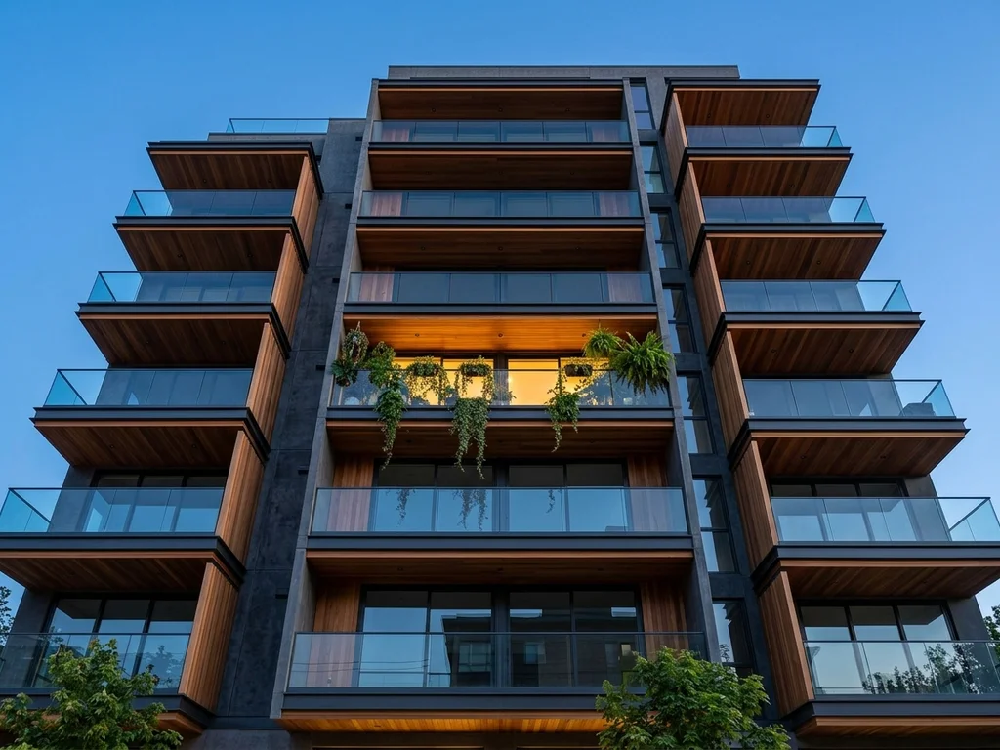
public/learning-scenes/numbers-counting/numbers-counting-3-seventh-floor.webp
Photorealistic architectural photography. Exterior view looking up at a modern mid-rise urban apartment building with stylish glass and cedar balconies, with the seventh floor balcony distinctly highlighted by warm interior lighting and lush green potted plants. Clear blue sky. Strictly human-free composition. Strictly no floor numerals, street signs, text or watermarks. Aspect ratio 4:3.
public/learning-scenes/numbers-counting/numbers-counting-3-eighth-lesson.webp
Photorealistic study still life. A neat student desk setup with a stack of seven completed spiral notebooks neatly closed, and an open eighth study notebook in front with a fountain pen resting on it, beside a small desk lamp and an hourglass. Quiet library atmosphere. Strictly human-free composition. Blank paper pages with strictly no text, letters or numbers. Aspect ratio 4:3.
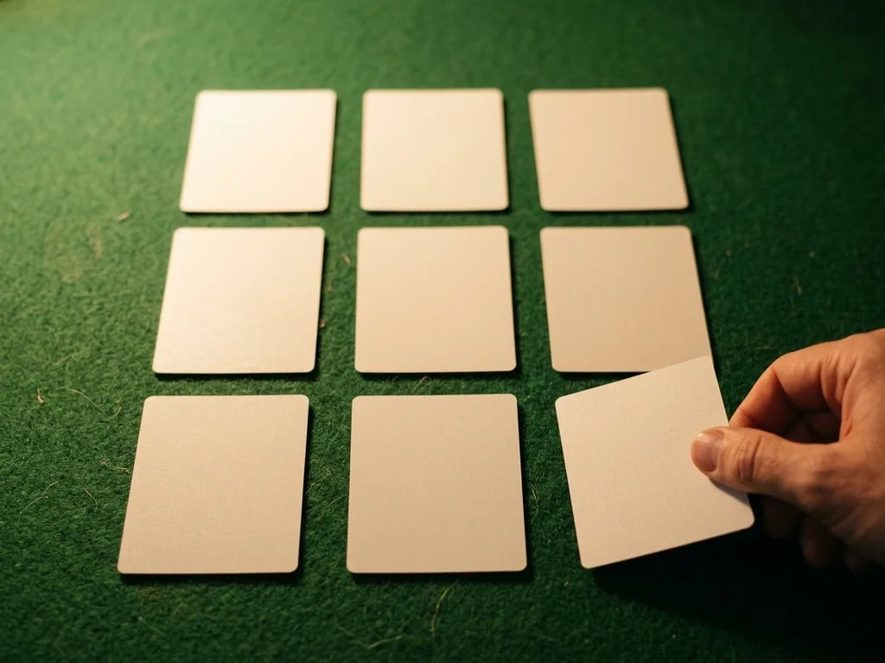
public/learning-scenes/numbers-counting/numbers-counting-3-ninth-card.webp
Photorealistic still life photography. A tabletop covered in green felt with nine rectangular blank cards laid out in a neat 3x3 grid. An adult hand gently lifts the ninth card in the bottom right corner of the grid. Warm tabletop lamp lighting. Modest adult male hand. Strictly blank cards with no symbols, numerals, letters, or watermarks. Aspect ratio 4:3.
public/learning-scenes/numbers-counting/numbers-counting-3-tenth-lesson.webp
Photorealistic study still life. A wooden desk featuring a desktop wooden perpetual calendar block set, a stack of organized study folders, an open textbook with blank illustrated diagrams, and an antique magnifying glass. Warm afternoon sunlight streaming through blinds. Strictly human-free composition. Strictly no readable text, numbers or watermarks. Aspect ratio 4:3.
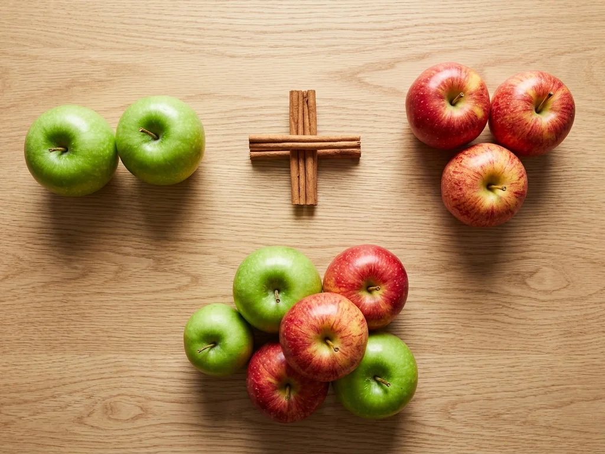
public/learning-scenes/numbers-counting/numbers-counting-3-two-plus-three-equals-five.webp
Photorealistic educational flat lay. On a clean light oak tabletop, a group of exactly two green granny smith apples is placed on the left, a plus-shaped arrangement of cinnamon sticks in the center, a group of exactly three red gala apples on the right, and five mixed apples grouped together below. Clean culinary math demonstration. Strictly human-free composition. Strictly no written numbers, equations, text or watermarks. Aspect ratio 4:3.
public/learning-scenes/numbers-counting/numbers-counting-4-minus-five-and-two.webp
Photorealistic educational flat lay. On a clean white marble surface, a group of five natural wooden geometric building cubes: three cubes remain clustered closely together in the center, while two cubes are visibly separated and placed to the far right, clearly depicting taking two away from five. Crisp natural light. Strictly human-free composition. Strictly no text, numerals, or watermarks. Aspect ratio 4:3.
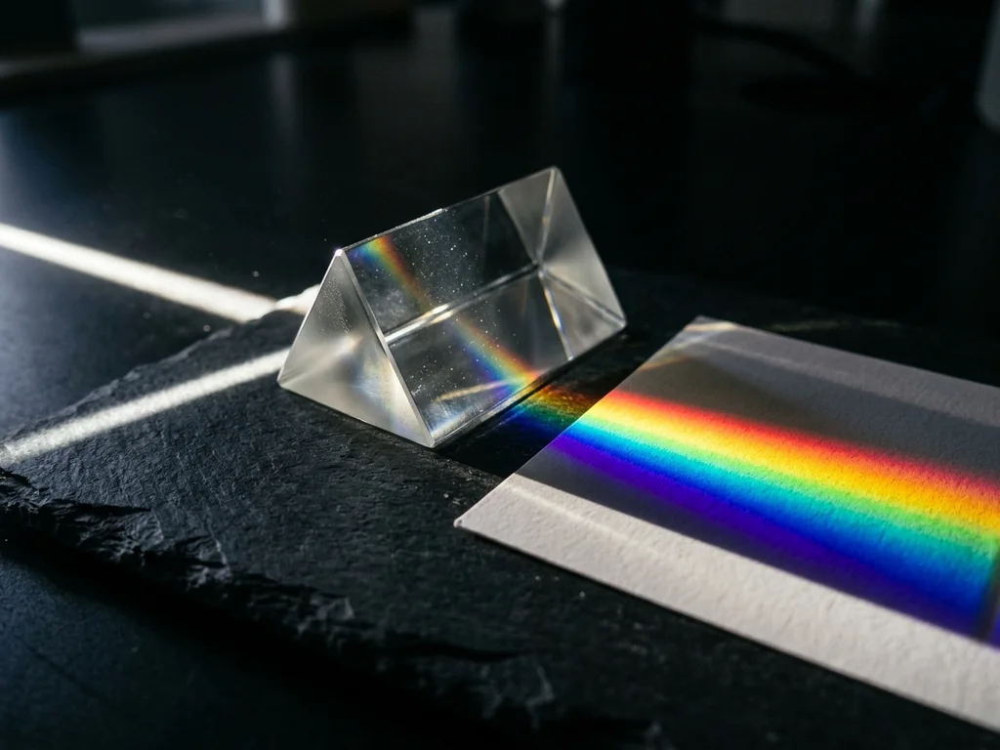
public/learning-scenes/colors/colors-1-indigo-rainbow.webp
Photorealistic science and optics photography. A solid optical glass triangular prism resting on a dark matte slate slab, splitting a bright ray of natural white sunlight into a vivid spectral rainbow beam cast across a white card, with the deep indigo-violet transition band clearly rich and prominent. Dramatic dark laboratory lighting. Strictly human-free composition. Strictly no labels, text or watermarks. Aspect ratio 4:3.
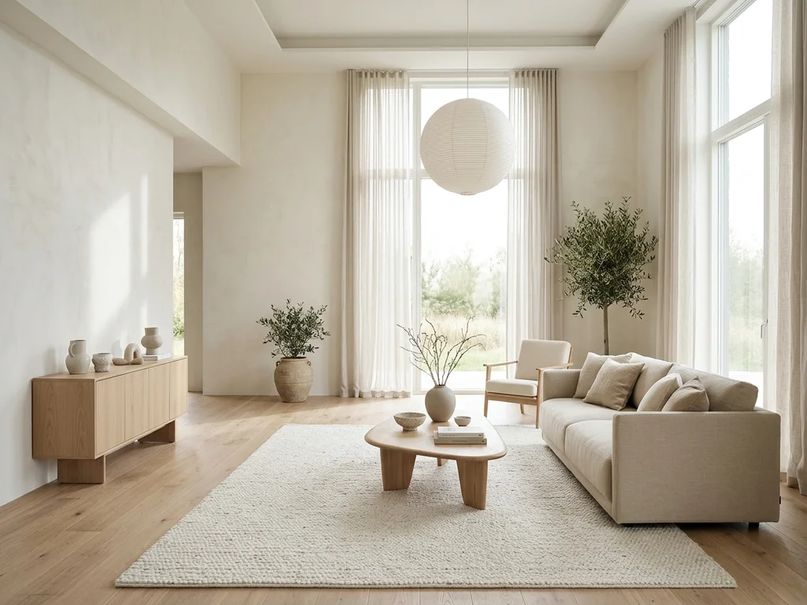
public/learning-scenes/colors/colors-2-light-walls.webp
Photorealistic interior design photography. A spacious, airy Scandinavian living room featuring pristine off-white and soft cream plaster walls, light oak hardwood flooring, a minimalist beige sofa, and tall floor-to-ceiling windows flooding the space with bright natural daylight. Serene, elegant architectural atmosphere. Strictly human-free composition. Strictly no wall art text, letters, or watermarks. Aspect ratio 4:3.
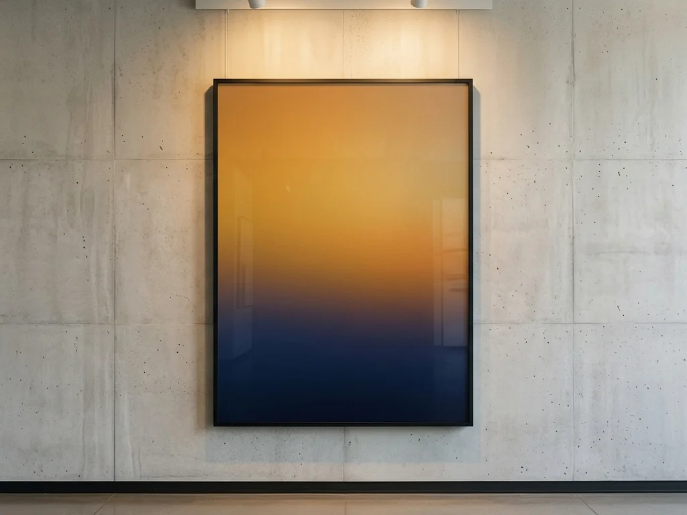
public/learning-scenes/colors/colors-3-smooth-gradient.webp
Photorealistic interior still life. A large minimalist gallery poster in a slim black aluminum frame hanging on a clean concrete gallery wall. The poster displays a seamless, perfectly smooth fine-art color gradient transitioning gracefully from warm radiant amber gold down to deep midnight navy blue. Soft museum track lighting. Strictly human-free composition. Strictly no text, typography, logos or watermarks. Aspect ratio 4:3.
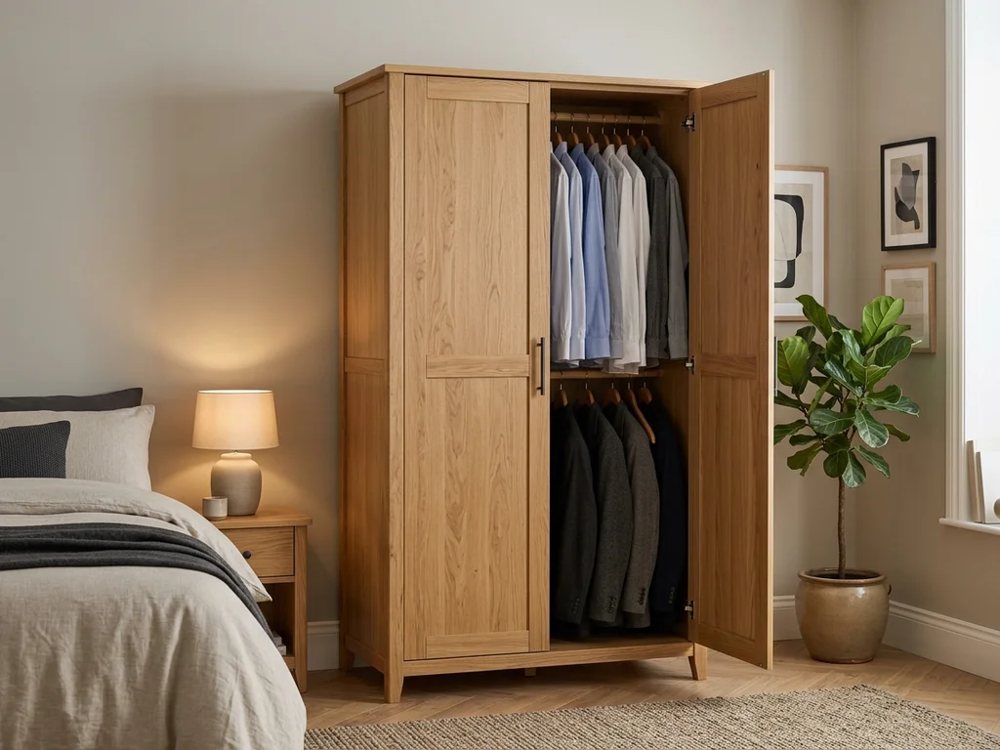
public/scene-images/bedroom-wardrobe-closet.webp
Photorealistic interior photography. An elegant modern adult bedroom showing a tall, freestanding double-door oak wardrobe cupboard standing against a neutral wall, with one panel door slightly open to reveal neatly organized hanging dress shirts and overcoats on wooden hangers. Warm ambient bedroom lighting. Strictly human-free composition. Strictly no labels, brand names, or watermarks. Aspect ratio 4:3.
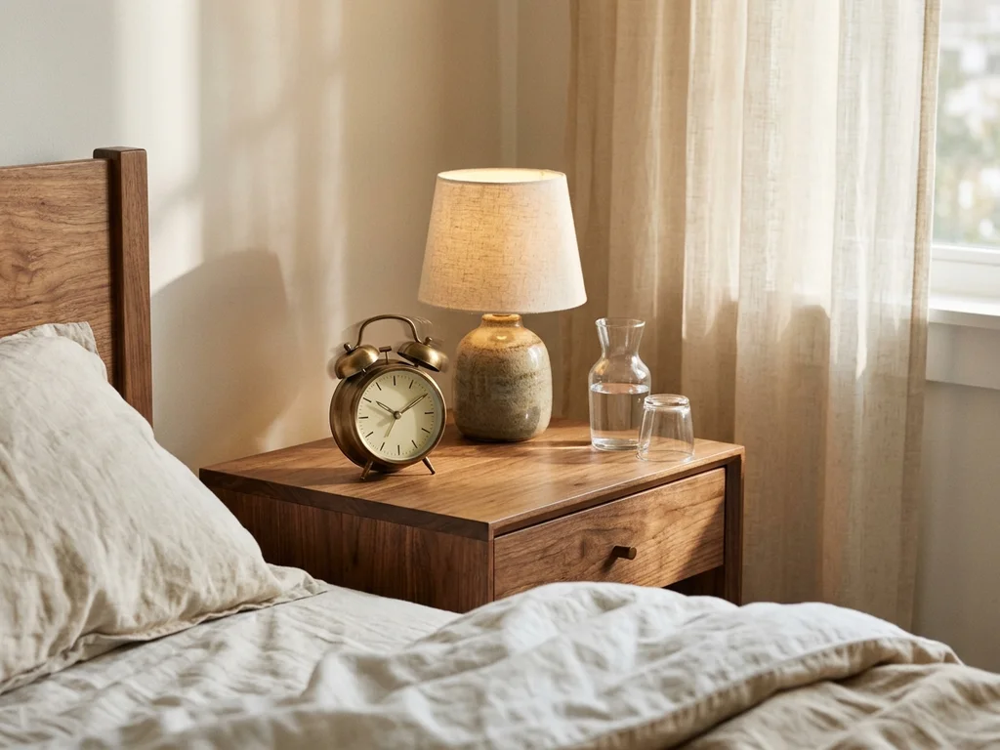
public/scene-images/bedroom-alarm-clock-nightstand.webp
Photorealistic interior still life. A solid walnut bedside nightstand next to an adult bed with clean linens. On the nightstand rests a classic brass twin-bell analog alarm clock with ringing hammer bells, a warm ceramic bedside lamp casting a gentle glow, and a small carafe of water. Morning sunlight through curtains. Strictly human-free composition. Clock face has classic tick marks without readable numerals. Strictly no text or watermarks. Aspect ratio 4:3.
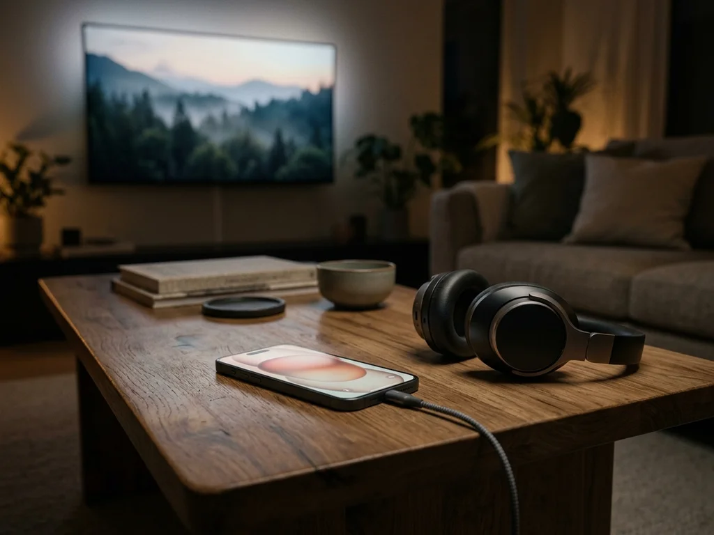
public/scene-images/living-room-entertainment-charging.webp
Photorealistic living room still life. A contemporary living room coffee table featuring a modern smartphone resting flat connected to a braided charging cable, a pair of premium wireless over-ear headphones laid nearby, and a large television mounted on the wall in the soft background showing a serene nature landscape. Evening ambient living room lighting. Strictly human-free composition. Phone screen shows generic glowing abstract lock screen without text or notifications. Strictly no readable text or logos. Aspect ratio 4:3.
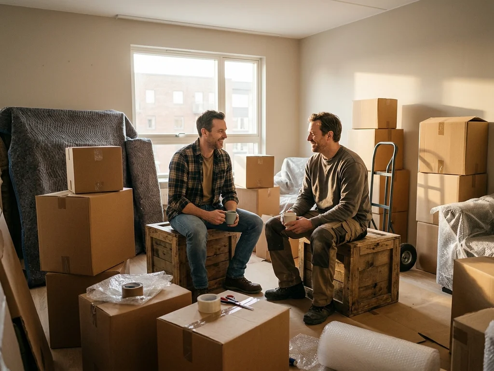
public/scene-images/living-room-moving-day-chat.webp
Photorealistic lifestyle photography. A newly moved apartment living room filled with neatly stacked taped cardboard moving boxes and wrapped furniture. Two modest adult men are sitting comfortably on sturdy wooden packing crates taking a well-deserved break, holding ceramic mugs of tea and smiling while chatting together. Warm afternoon window light. No women. Boxes are plain cardboard with strictly no printed text, shipping labels, logos or watermarks. Aspect ratio 4:3.
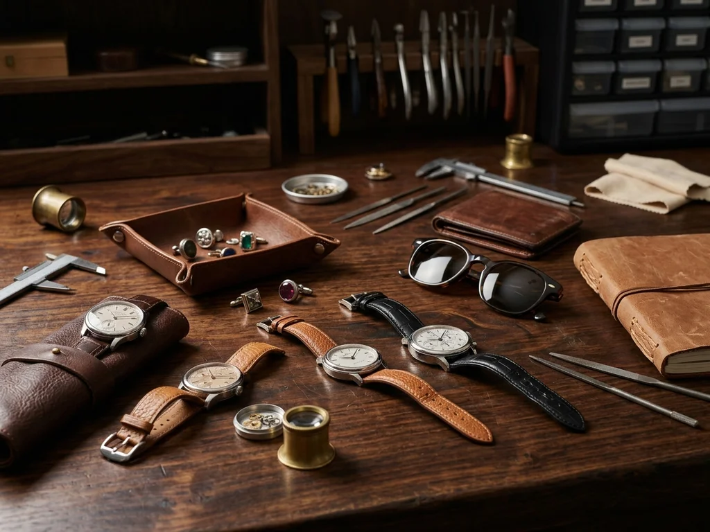
public/scene-images/accessories-jewelry-hero.webp
Photorealistic still life photography. An elegant artisan jeweler's workbench showing fine leather accessories, classic mechanical watches with leather straps, cufflinks, and sunglasses on polished dark wood. Soft studio lighting. Human-free. Strictly no text, logos, or watermarks. Aspect ratio 4:3.
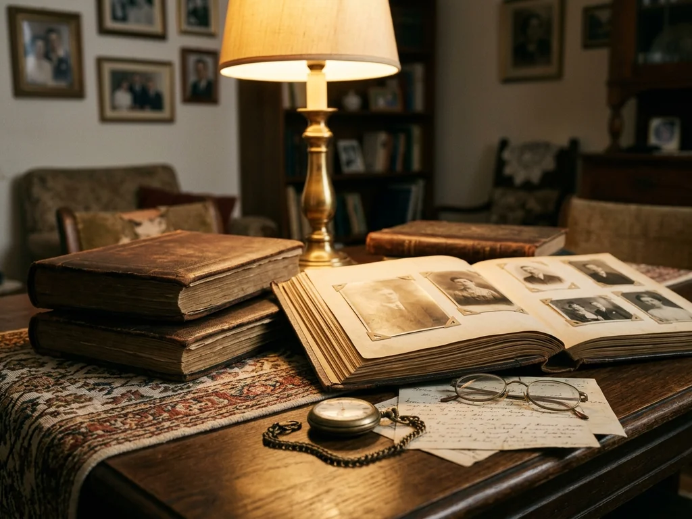
public/scene-images/ages-life-stages-hero.webp
Photorealistic documentary photography. A warm family heritage living room table displaying vintage leather-bound photo albums with soft-focus ancestral portraits, an antique brass pocket watch, and a warm desk lamp. Dignified and respectful. Human-free. Strictly no text or watermarks. Aspect ratio 4:3.
public/scene-images/architect-s-studio-hero.webp
Photorealistic architectural studio photography. A large natural birch architect drafting table covered in detailed geometric floorplans, precision metal rulers, drafting compasses, and wooden 3D scale models of modern buildings. Sunlight streaming through large loft windows. Human-free. Strictly no readable text or words on blueprints. Aspect ratio 4:3.
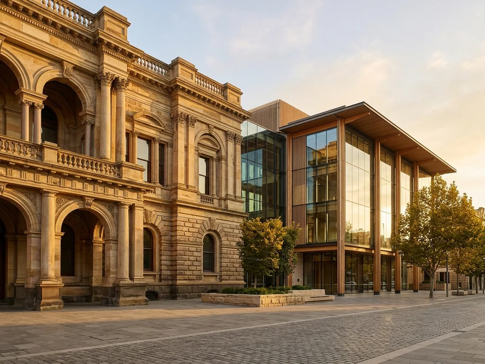
public/scene-images/architecture-styles-hero.webp
Photorealistic architectural photography. A grand panoramic street view comparing distinct historical and modern building facades: classical stone arches and columns transitioning gracefully into a sleek contemporary glass and timber pavilion under a golden afternoon sky. Human-free. Strictly no signs, text or watermarks. Aspect ratio 4:3.
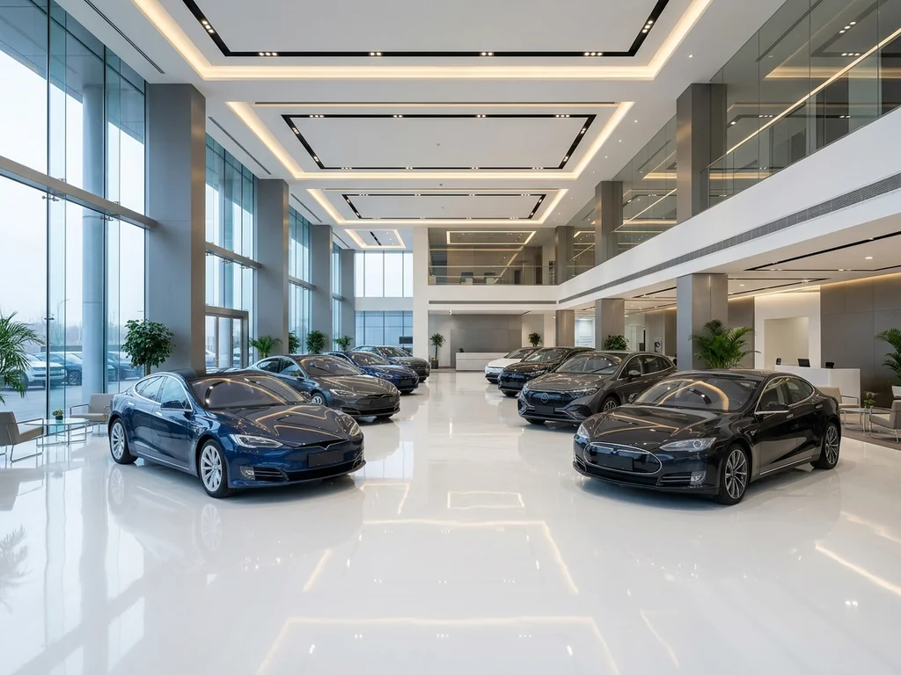
public/scene-images/auto-dealership-hero.webp
Photorealistic commercial photography. A pristine, gleaming modern automobile showroom with polished white reflective floors, exhibiting elegant dark sedans and electric vehicles under architectural recessed ceiling lighting. Human-free. Strictly no brand logos, license plate text or watermarks. Aspect ratio 4:3.
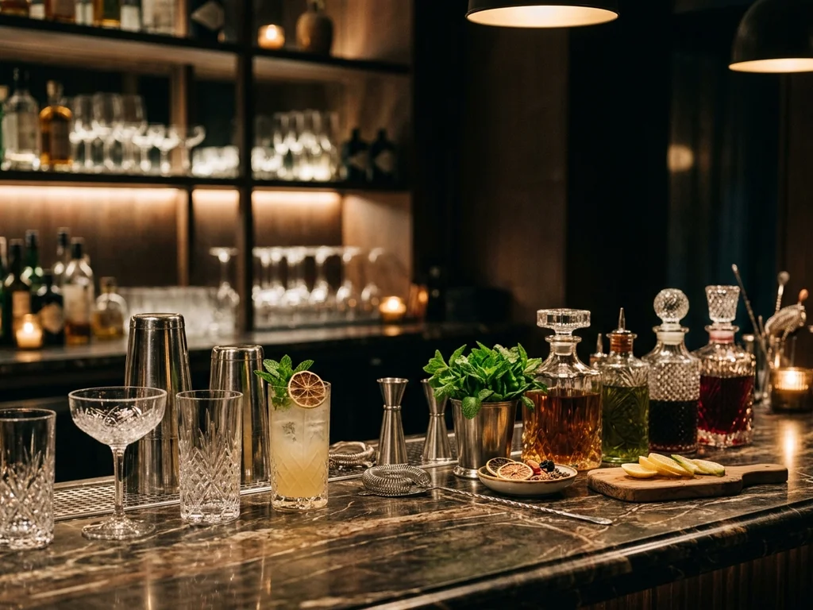
public/scene-images/bar-culture-hero.webp
Photorealistic hospitality photography. A sophisticated artisan mocktail lounge showing a polished marble bar counter with crystal glassware, stainless steel shakers, fresh sprigs of mint, and decanters filled with botanical syrups. Warm moody ambient lighting. Human-free. Strictly no readable bottle labels, logos or text. Aspect ratio 4:3.
public/scene-images/basic-emotions-hero.webp
Photorealistic psychological study still life. A tranquil reading corner with an open journal, ceramic coffee cup, a small succulent plant, and natural morning light, conveying a sense of serenity, clarity, and mindfulness. Human-free. Strictly no text, words or watermarks. Aspect ratio 4:3.
public/scene-images/beverages-hero.webp
Photorealistic culinary photography. A rustic wooden cafe table displaying an array of artisanal hot and cold beverages: a freshly brewed ceramic cup of coffee with delicate latte art, a glass teapot with blooming herbal tea, and a tall chilled glass of infused citrus water with ice. Soft natural light. Human-free. Strictly no text or logos. Aspect ratio 4:3.
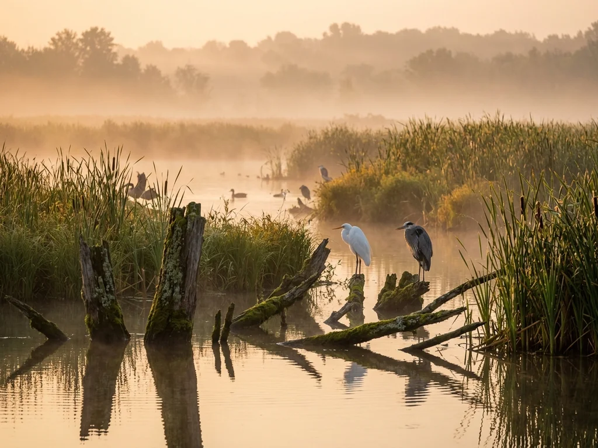
public/scene-images/bird-sanctuary-hero.webp
Photorealistic wildlife photography. A serene wetland bird sanctuary at sunrise with misty calm waters, lush green reeds, and majestic waterbirds resting peacefully on mossy wooden perches in the soft golden morning mist. Human-free. Strictly no signs or watermarks. Aspect ratio 4:3.
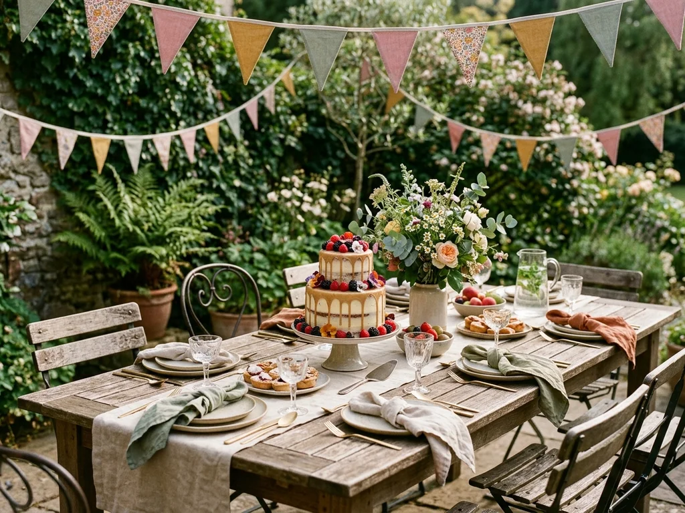
public/scene-images/birthday-party-hero.webp
Photorealistic celebration still life. A festively decorated wooden dining table with a beautifully glazed celebration cake, colorful fabric bunting, ceramic plates, and cloth napkins in an elegant garden patio setting. Human-free. Strictly no readable text, writing on cake, or watermarks. Aspect ratio 4:3.
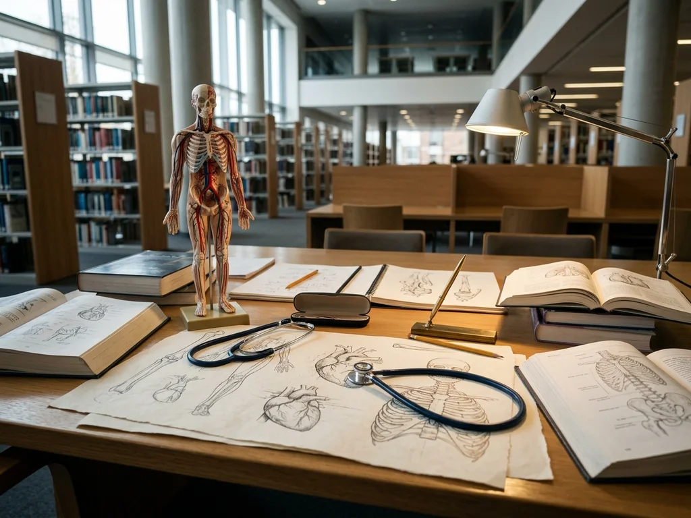
public/scene-images/body-systems-hero.webp
Photorealistic educational still life. A modern medical university library study desk with an anatomical reference model of the human skeletal and circulatory system, medical stethoscope, and anatomical sketches on textured paper. Professional, scholarly lighting. Human-free. Strictly no text, labels or watermarks. Aspect ratio 4:3.
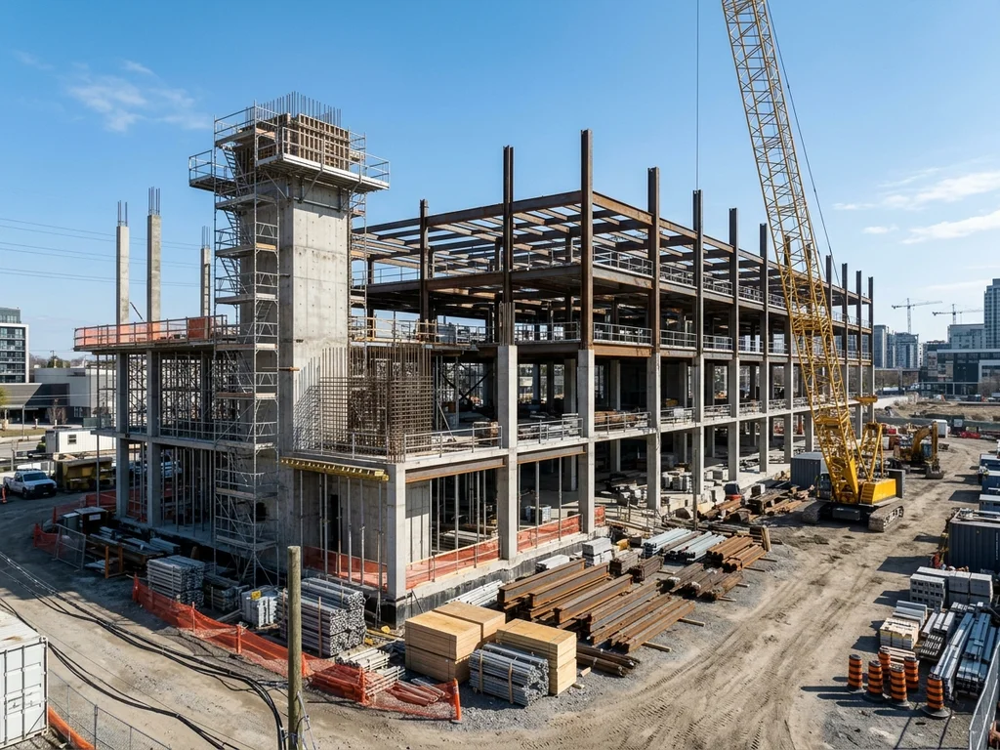
public/scene-images/building-construction-hero.webp
Photorealistic construction photography. An active modern architectural construction site with steel structural beams, reinforced concrete pillars, scaffolding, and safety equipment neatly arranged under a clear blue sky. Professional adult setting. Human-free. Strictly no logo signs, brand names or text. Aspect ratio 4:3.
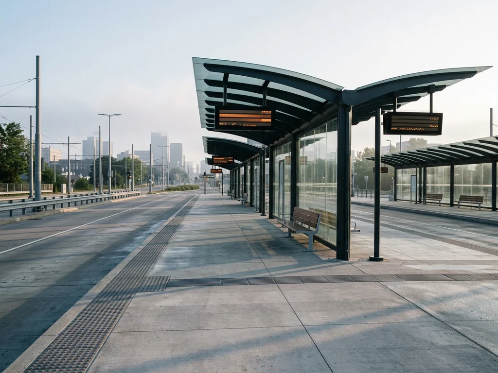
public/scene-images/bus-station-hero.webp
Photorealistic urban transit photography. A modern city transit terminal terminal with covered glass waiting shelters, clean concrete paving, digital arrival displays showing abstract light patterns, and passenger seating under soft morning light. Human-free. Strictly no readable route numbers, signs or text. Aspect ratio 4:3.
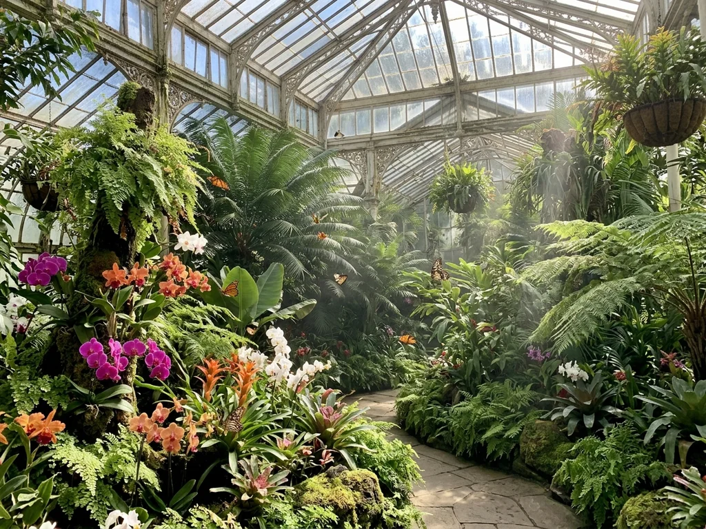
public/scene-images/butterfly-garden-hero.webp
Photorealistic botanical garden photography. A lush tropical greenhouse conservatory filled with vibrant blooming orchids, ferns, and exotic monarch and swallowtail butterflies fluttering among sun-dappled foliage. Human-free. Strictly no signs or watermarks. Aspect ratio 4:3.
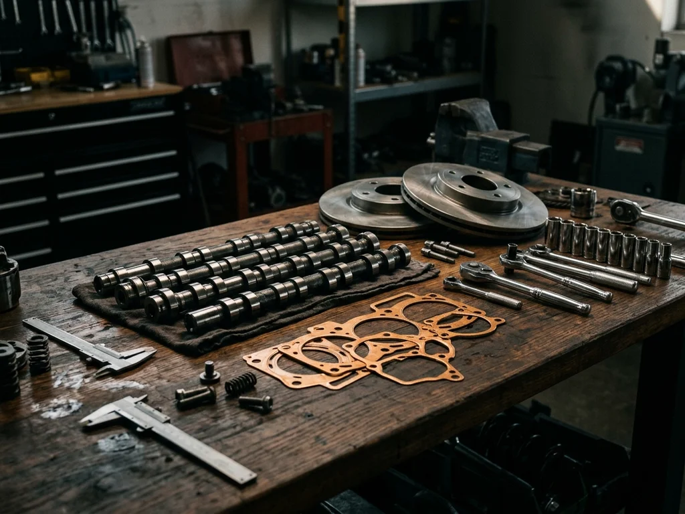
public/scene-images/car-parts-mechanics-hero.webp
Photorealistic automotive engineering still life. A clean, organized mechanical workshop workbench displaying high-performance engine parts: gleaming steel camshafts, brake rotors, precision socket wrenches, and copper gaskets on an oiled oak surface. Dramatic workshop lighting. Human-free. Strictly no text, numbers or brand logos. Aspect ratio 4:3.
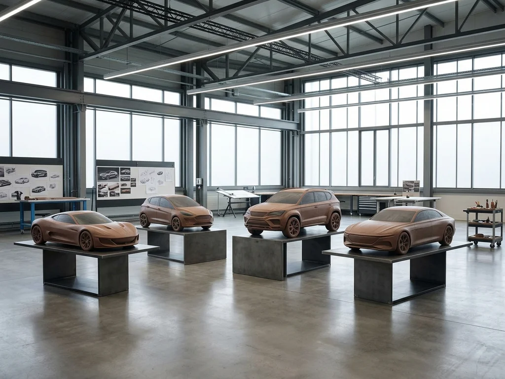
public/scene-images/car-types-hero.webp
Photorealistic automotive design photography. A clean design studio showroom featuring sleek clay scale models of diverse vehicle classes: a coupe, a compact hatchback, an SUV, and a grand touring sedan on minimalist display pedestals. Human-free. Strictly no logos, text or watermarks. Aspect ratio 4:3.
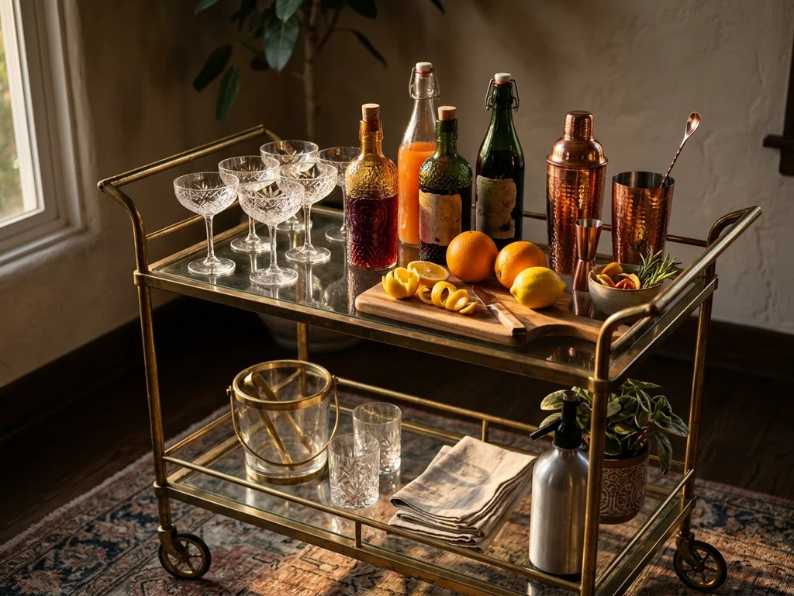
public/scene-images/classic-cocktails-hero.webp
Photorealistic beverage photography. An elegant brass bar cart holding vintage cut-crystal coupe glasses, copper mixing tins, fresh citrus twists, and artisanal non-alcoholic aperitifs in textured glass bottles. Warm evening light. Human-free. Strictly no readable labels, words or text. Aspect ratio 4:3.
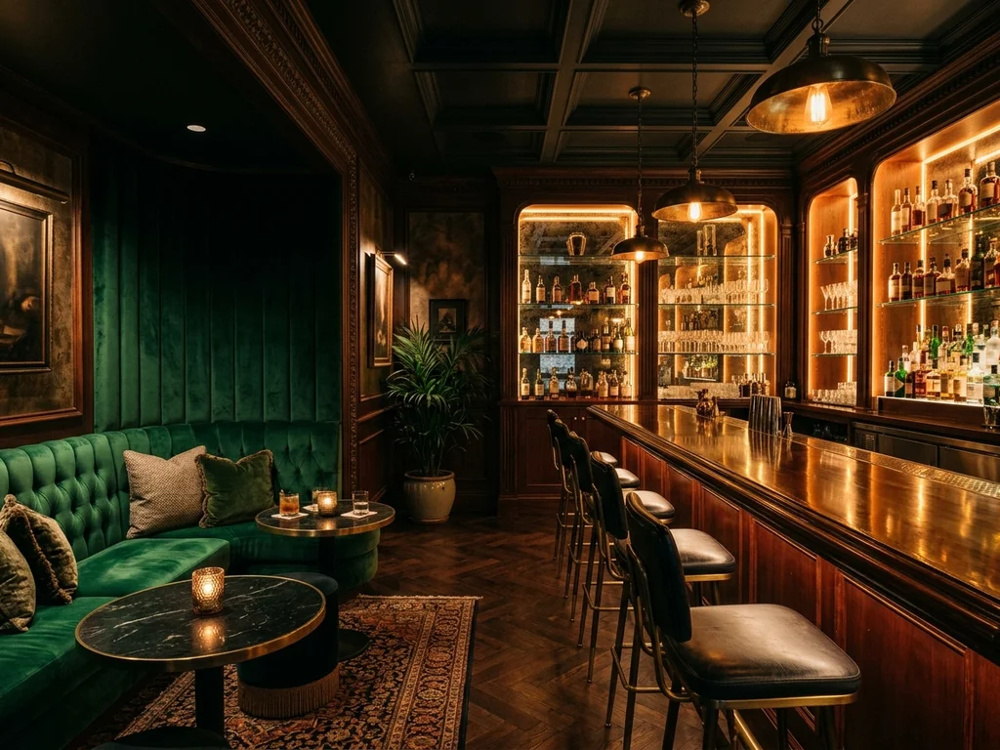
public/scene-images/cocktail-bar-hero.webp
Photorealistic interior hospitality photography. An upscale hotel lounge featuring an emerald green velvet seating nook, a polished mahogany bar with warm backlighting behind glass shelves, and low brass pendant lamps. Sophisticated adult ambiance. Human-free. Strictly no readable signs, text or labels. Aspect ratio 4:3.
public/scene-images/colors-hero.webp
Photorealistic fine-art still life photography. An artist's paint mixing table with ceramic palettes containing vivid pure oil pigments: ultramarine blue, cadmium yellow, vermilion red, emerald green, and titanium white, beside camel-hair brushes and a crystal prism casting subtle rainbow reflections. Human-free. Strictly no text or watermarks. Aspect ratio 4:3.
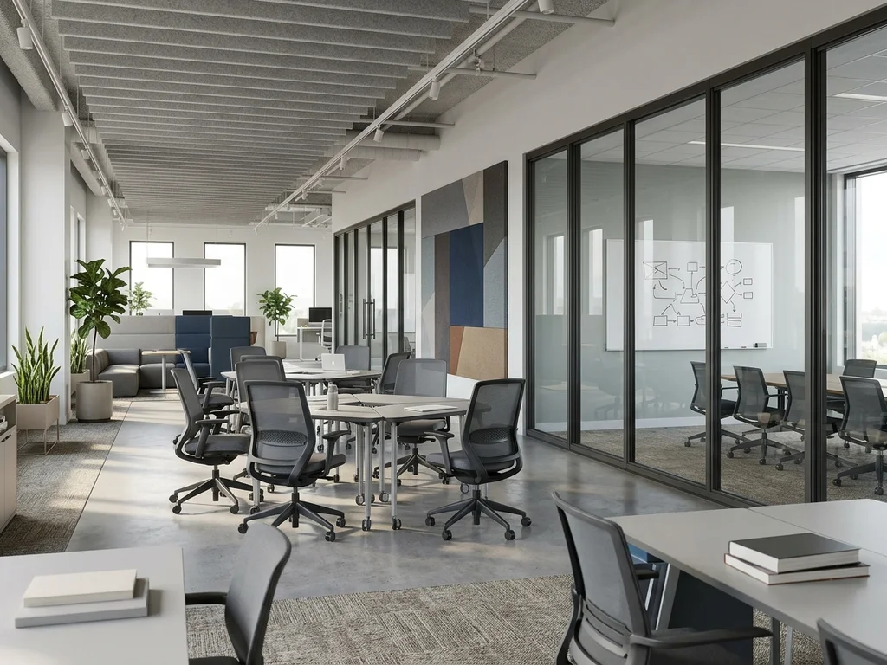
public/scene-images/communication-verbs-hero.webp
Photorealistic modern office photography. An open collaborative workspace with glass conference walls, acoustic fabric wall panels, ergonomic meeting chairs, and a clean whiteboard with abstract concept shapes. Soft diffused daylight. Human-free. Strictly no readable words, writing or text. Aspect ratio 4:3.
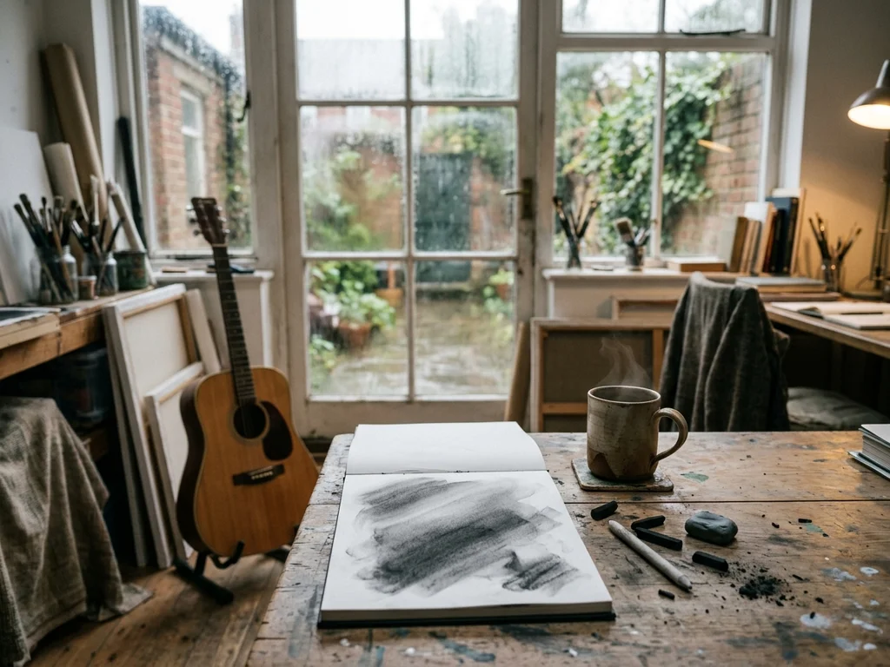
public/scene-images/complex-feelings-hero.webp
Photorealistic artistic still life. A tranquil artist's studio overlooking a rainy courtyard window, with a steaming ceramic mug, an acoustic guitar resting on a stand, and an open sketchpad with abstract charcoal gradients, capturing contemplation and depth of emotion. Human-free. Strictly no text or watermarks. Aspect ratio 4:3.
public/scene-images/cooking-methods-hero.webp
Photorealistic culinary photography. A professional chef's kitchen showcasing diverse culinary preparation techniques: copper sauté pans simmering, a bamboo steamer with rising fragrant steam, and a cast-iron griddle on a clean gas range. Warm kitchen glow. Human-free. Strictly no brand labels or text. Aspect ratio 4:3.
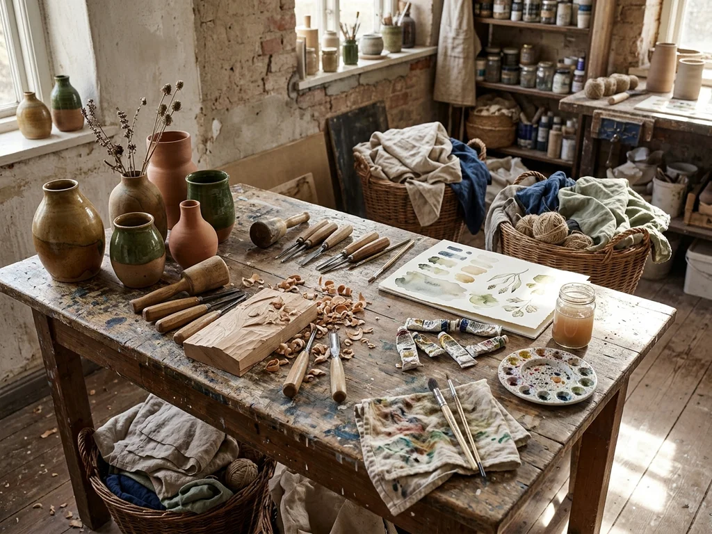
public/scene-images/creative-hobbies-hero.webp
Photorealistic creative studio still life. A rustic craft table displaying various artistic pursuits: hand-thrown pottery vases, watercolor paint tubes on paper, woodcarving tools, and natural linen textiles in baskets. Sunlit artisan workshop. Human-free. Strictly no text or watermarks. Aspect ratio 4:3.
public/scene-images/currency-payment-hero.webp
Photorealistic financial still life. A clean minimalist leather valet tray holding modern contactless payment cards, a silver money clip, and assorted international currency coins on a marble reception counter. Crisp high-end lighting. Human-free. Stylized cards with strictly no readable names, numbers or text. Aspect ratio 4:3.
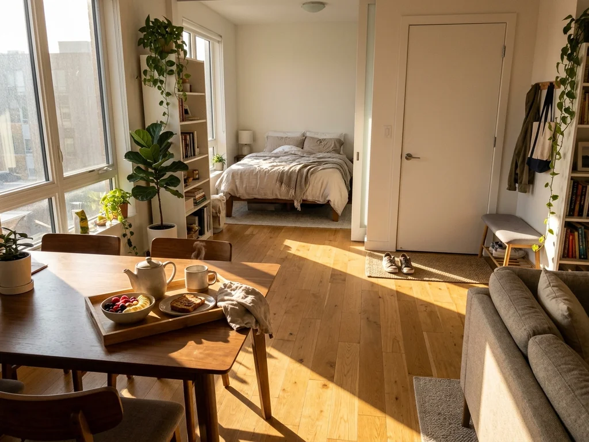
public/scene-images/daily-action-verbs-hero.webp
Photorealistic home morning photography. A bright contemporary apartment living and dining area in the morning sun: a made bed in the background, a breakfast tray with fruit and tea on the table, and walking shoes neatly by the door, representing daily life activities. Human-free. Strictly no text or logos. Aspect ratio 4:3.
public/scene-images/days-months-hero.webp
Photorealistic stationery still life. A solid oak desk featuring a luxurious leather-bound annual desk planner, an elegant brass desk clock, an ink fountain pen, and a wooden perpetual calendar block set. Warm morning window light. Human-free. Strictly no readable printed words or text. Aspect ratio 4:3.
public/scene-images/driving-road-rules-hero.webp
Photorealistic transportation photography. A scenic, paved multi-lane highway winding smoothly through picturesque green hills under a clear blue sky, with crisp painted lane markings, reflective road studs, and clear modern guardrails. Human-free. Strictly no readable text on traffic signs or watermarks. Aspect ratio 4:3.
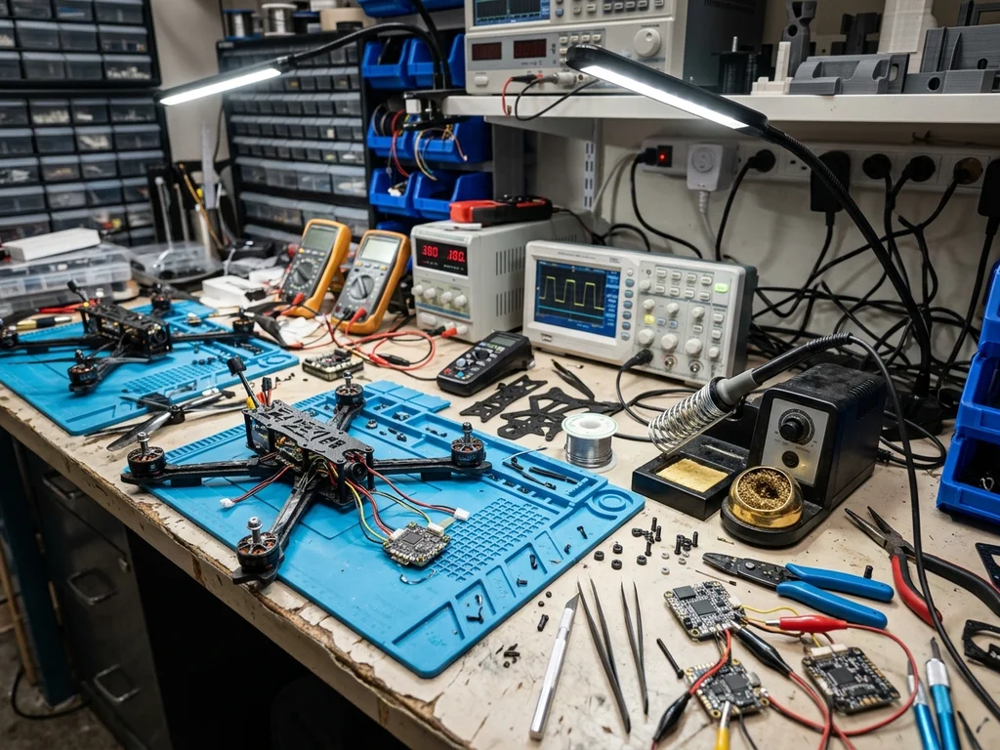
public/scene-images/drone-workshop-hero.webp
Photorealistic technology maker space photography. An electronics lab workbench with carbon-fiber quadcopter drone frames, brushless motors, precision soldering stations, and circuit boards under bright LED task lighting. High-tech engineering environment. Human-free. Strictly no text, logos or watermarks. Aspect ratio 4:3.
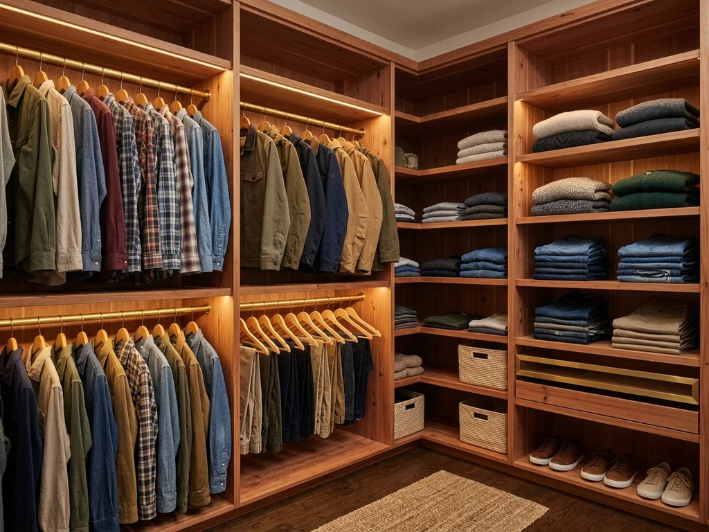
public/scene-images/everyday-clothing-hero.webp
Photorealistic wardrobe photography. A stylish walk-in wardrobe with natural cedar shelving and brass rails displaying neatly organized adult casual attire: cotton shirts on hangers, folded knit sweaters, denim trousers, and canvas jackets. Soft warm interior lighting. Human-free. Strictly no brand labels, text or logos. Aspect ratio 4:3.
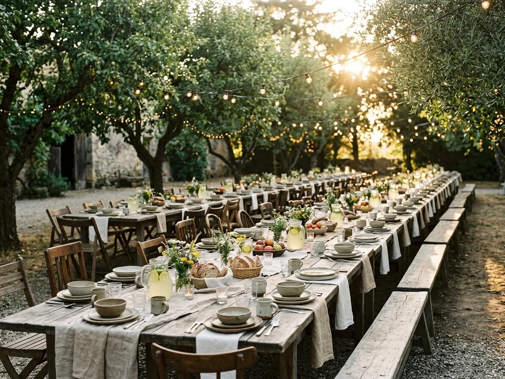
public/scene-images/extended-family-hero.webp
Photorealistic heritage dining photography. A long banquet dining table set for an extended family reunion meal in an orchard courtyard, with rustic ceramic tableware, linen runners, pitchers of lemonade, and wooden chairs under fairy lights. Warm sunset ambiance. Human-free. Strictly no text or watermarks. Aspect ratio 4:3.
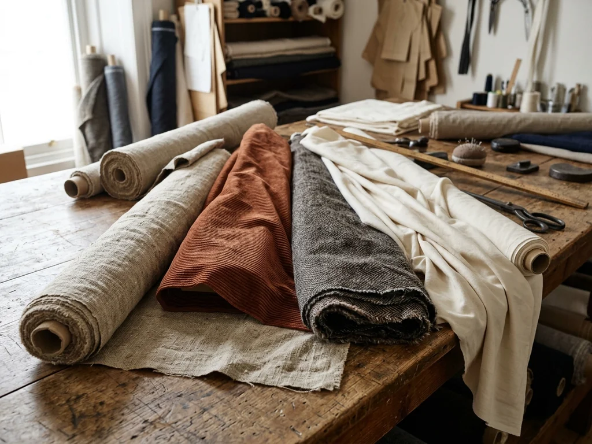
public/scene-images/fabrics-textiles-hero.webp
Photorealistic textile studio photography. A tailor's table draped with diverse premium natural fabric bolts: raw linen, ribbed corduroy, combed Egyptian cotton, and herringbone tweed rolled out to show tactile woven textures. Natural side lighting. Human-free. Strictly no labels, tags or text. Aspect ratio 4:3.
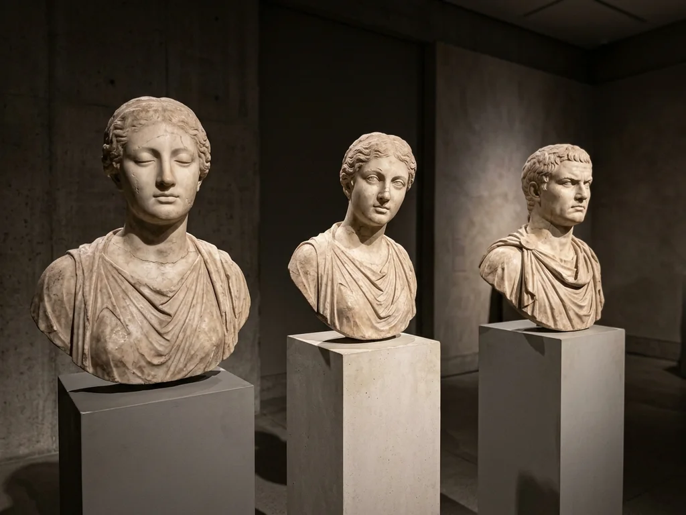
public/scene-images/facial-expressions-hero.webp
Photorealistic classical sculpture photography. An art gallery display featuring three classical marble portrait busts expressing distinct subtle human expressions—serenity, curiosity, and resolve—arranged on minimalist museum pedestals under dramatic directional spotlighting. Human-free. Strictly no text or labels. Aspect ratio 4:3.
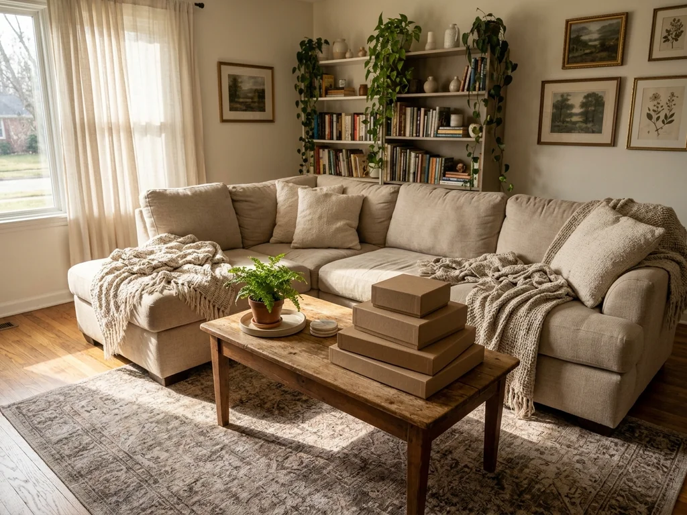
public/scene-images/family-hero.webp
Photorealistic home living room photography. A warm, inviting family living room with a plush sectional sofa, woven throw blankets, family board game boxes with blank covers on the coffee table, and warm sunlight illuminating the wooden floor. Dignified and peaceful. Human-free. Strictly no text or framed face photos. Aspect ratio 4:3.
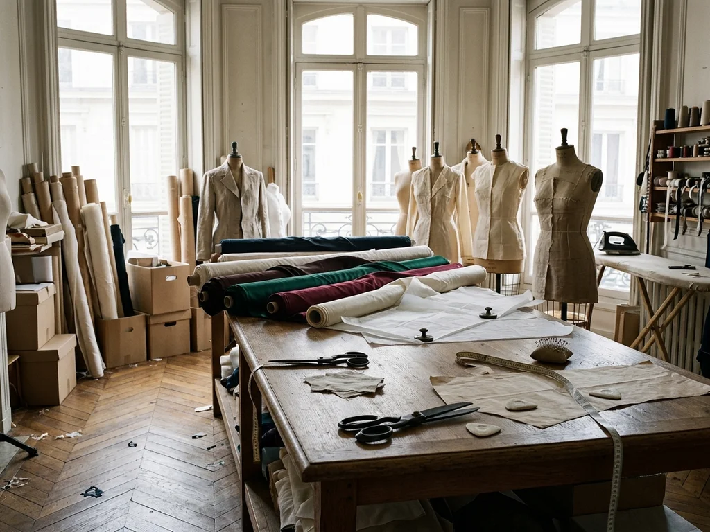
public/scene-images/fashion-atelier-hero.webp
Photorealistic haute couture atelier photography. An elegant fashion design studio with tailoring mannequins draped in structured raw linen, rolls of silk fabric, tailor's chalk, and vintage dressmaking shears on a large oak cutting table. Soft daylight from tall Parisian windows. Human-free. Strictly no text or labels. Aspect ratio 4:3.
public/scene-images/fashion-design-hero.webp
Photorealistic fashion design studio photography. A moodboard and design drafting table displaying fabric swatch samples, color palette cards, pencils, and drafting rulers in a bright creative loft. Inspiring design ambiance. Human-free. Strictly no readable words, logos or text. Aspect ratio 4:3.
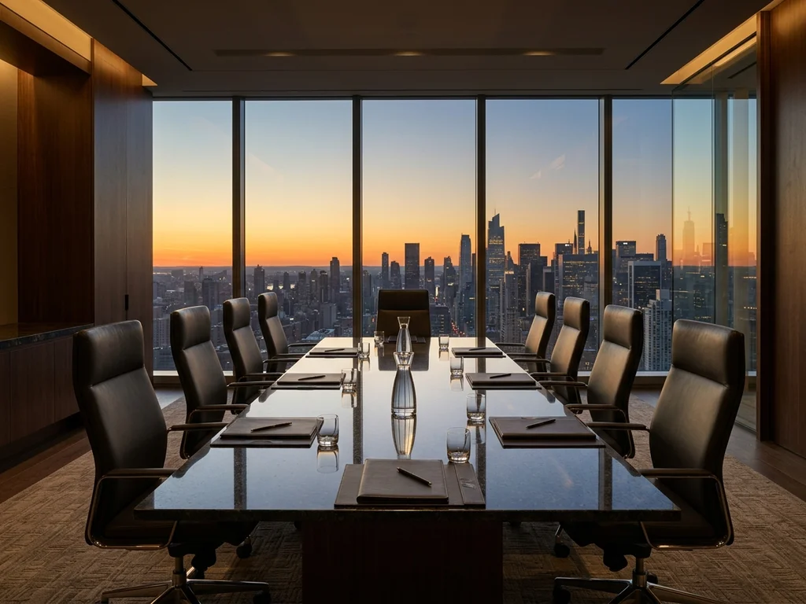
public/scene-images/financial-services-hero.webp
Photorealistic corporate finance photography. A high-end wealth advisory office with a polished granite conference table, leather executive chairs, and panoramic city skyline views through floor-to-ceiling glass windows at sunset. Prestigious, dignified atmosphere. Human-free. Strictly no text, graphs or watermarks. Aspect ratio 4:3.
public/scene-images/five-senses-hero.webp
Photorealistic sensory still life photography. A mindful artistic flat lay on slate: fragrant whole vanilla beans, a smooth river pebble, a brass singing bowl, colorful edible flowers, and a glass prism refracting a warm beam of light. High aesthetic balance. Human-free. Strictly no text or watermarks. Aspect ratio 4:3.
public/scene-images/footwear-hero.webp
Photorealistic shoe boutique photography. A luxury bespoke shoe salon showing minimalist floating shelves displaying finely crafted leather dress shoes, desert boots, and suede loafers alongside cedar shoe trees and horsehair polishing brushes. Warm boutique lighting. Human-free. Strictly no brand logos or text. Aspect ratio 4:3.
public/scene-images/forest-hero.webp
Photorealistic nature landscape photography. A majestic temperate forest trail winding through towering ancient cedar and pine trees, with sunbeams cutting dramatically through morning forest mist and vibrant green moss covering the forest floor. Peaceful and crisp. Human-free. Strictly no signs or watermarks. Aspect ratio 4:3.
public/scene-images/formal-business-wear-hero.webp
Photorealistic sartorial menswear photography. An upscale tailor's display showing charcoal wool three-piece suits, pressed formal dress shirts, silk ties, and leather oxford shoes arranged neatly on cedar hangers against dark wood paneling. Sophisticated adult elegance. Human-free. Strictly no labels or text. Aspect ratio 4:3.
public/scene-images/freelancing-remote-work-hero.webp
Photorealistic home office photography. An ergonomic remote workstation setup in a sunlit corner: a dual monitor desk, mechanical keyboard, wireless mouse, comfortable mesh chair, a potted monstera plant, and a warm ceramic coffee mug. Productive modern setting. Human-free. Strictly no readable text on screens or walls. Aspect ratio 4:3.
public/scene-images/giving-directions-hero.webp
Photorealistic urban exploration photography. A scenic viewpoint plaza overlooking historic city streets, featuring a detailed brass topographical relief model on a stone plinth, and pedestrian stone pathways branching gracefully toward key landmarks. Golden hour. Human-free. Strictly no readable street names or text. Aspect ratio 4:3.
public/scene-images/graduation-hero.webp
Photorealistic commencement celebration still life. An antique library desk holding a formal academic graduation cap with silk tassel, a rolled ceremonial diploma certificate tied with red satin ribbon, a brass fountain pen, and a bouquet of white lilies. Dignified scholarly achievement. Human-free. Strictly no text on parchment. Aspect ratio 4:3.
public/scene-images/grains-dairy-hero.webp
Photorealistic artisanal market still life. A rustic farm pantry counter showcasing whole food staples: sheaves of golden wheat and oats in a stoneware crock, artisanal glass bottles of farm milk, blocks of aged farmhouse cheese, and a wooden bowl of ancient grains. Natural morning light. Human-free. Strictly no labels or text. Aspect ratio 4:3.
public/scene-images/hand-actions-hero.webp
Photorealistic artisanal craft photography. A master ceramist's pottery wheel with a smooth terracotta vase being shaped, showing wet clay contours, natural sponges, and wooden sculpting ribs on the splash pan. Warm studio light. Modest adult male hands shaping the clay. Strictly no text or watermarks. Aspect ratio 4:3.
public/scene-images/home-features-hero.webp
Photorealistic architectural residential photography. A stunning contemporary home interior highlighting modern design features: a double-height vaulted ceiling, an open-tread floating oak staircase, exposed timber beams, and floor-to-ceiling glass sliding doors opening onto a tranquil terrace. Human-free. Strictly no text or watermarks. Aspect ratio 4:3.
public/scene-images/human-body-hands-and-feet-hero.webp
Photorealistic anatomical art still life. An artist's reference studio displaying classical articulated wooden artist manikins of hands and feet arranged gracefully on pedestals beside textured sketch paper and charcoal pencils. Dignified fine-art study setting. Human-free. Strictly no text or labels. Aspect ratio 4:3.
public/scene-images/human-body-head-and-face-hero.webp
Photorealistic classical sculpture photography. An art museum exhibition room displaying classical carved marble busts focusing on cranial and facial structure, illuminated by soft museum spotlights against a deep charcoal gallery wall. Educational, timeless fine art. Human-free. Strictly no text or labels. Aspect ratio 4:3.
public/scene-images/human-body-lower-body-hero.webp
Photorealistic athletic fitness photography. A clean modern biomechanics exercise lab showing running biomechanics equipment, balance platforms, and hurdle training gear neatly arranged in an airy sports clinic. Human-free. Strictly no logos, brand text or watermarks. Aspect ratio 4:3.
public/scene-images/human-body-upper-body-hero.webp
Photorealistic medical education still life. A medical consultation room displaying an anatomical torso model showing upper body musculature and ribcage on a clean study desk, beside a classic stethoscope and anatomical reference charts. High dignity, clinical education. Human-free. Strictly no text or labels. Aspect ratio 4:3.
public/scene-images/ice-cream-shop-hero.webp
Photorealistic artisanal gelateria photography. A gleaming stainless steel and glass display freezer filled with mounds of freshly churned artisanal gelato: pistachio with chopped nuts, dark chocolate, and strawberry sorbet, garnished with real fruit in an Italian ice cream parlour. Human-free. Strictly no flavor label text or logos. Aspect ratio 4:3.
public/scene-images/indoor-hobbies-hero.webp
Photorealistic cozy living room hobby corner. An inviting armchair beside a warm floor lamp and a low table holding a wooden jigsaw puzzle in progress, a chess board with carved wooden pieces, and a cup of chamomile tea. Relaxing evening atmosphere. Human-free. Strictly no text on puzzle or board. Aspect ratio 4:3.
public/scene-images/insect-world-hero.webp
Photorealistic entomology museum photography. A clean natural history museum specimen display case featuring beautifully arranged exotic jewel beetles, iridescent metallic cicadas, and drawer cabinets of biodiversity on archival white linen. Educational and awe-inspiring. Human-free. Strictly no text labels or watermarks. Aspect ratio 4:3.
public/scene-images/interior-design-hero.webp
Photorealistic interior design studio photography. A designer's flat lay consultation table covered in ceramic tile samples, marble slabs, paint swatch fans, engineered hardwood samples, and linen upholstery swatches. Sophisticated architectural aesthetic. Human-free. Strictly no brand text or labels. Aspect ratio 4:3.
public/scene-images/internal-organs-hero.webp
Photorealistic medical education photography. A medical university laboratory desk featuring high-precision anatomical models of the heart and lungs in transparent acrylic display stands, with medical reference charts in soft focus behind. Dignified clinical setting. Human-free. Strictly no text or labels. Aspect ratio 4:3.
public/scene-images/kitchen-utensils-hero.webp
Photorealistic culinary still life. An organized gourmet kitchen hanging rack and counter displaying stainless steel whisks, wooden spoons, silicone spatulas, copper measuring cups, and a heavy granite mortar and pestle on a butcher block island. Bright natural kitchen light. Human-free. Strictly no text or logos. Aspect ratio 4:3.
public/scene-images/laundromat-hero.webp
Photorealistic commercial photography. A modern, retro-chic laundromat with rows of gleaming chrome front-loading commercial washing machines and dryers, wire rolling laundry baskets, and clean wooden folding tables under bright warm fluorescent lights. Clean urban aesthetic. Human-free. Strictly no brand logos, signage text or watermarks. Aspect ratio 4:3.
public/scene-images/law-firm-hero.webp
Photorealistic professional legal office photography. A distinguished legal partnership library featuring floor-to-ceiling mahogany bookshelves filled with leather-bound legal tomes, a solid oak partner desk with a green bankers lamp, and a leather armchair. Prestigious, quiet scholarly atmosphere. Human-free. Strictly no readable text on spines or documents. Aspect ratio 4:3.
public/scene-images/legal-documents-hero.webp
Photorealistic legal still life photography. A dark walnut desk holding official legal folders with wax seals, a vintage brass letter opener, a fountain pen, and a polished brass gavel resting on a sound block. Dignified jurisprudence setting. Human-free. Strictly blank parchment paper with no readable text, words or signatures. Aspect ratio 4:3.
public/scene-images/life-events-hero.webp
Photorealistic photographic documentary still life. A cedar memory chest open on an oak table holding significant commemorative keepsakes: a brass pocket watch, a tied certificate scroll, keys to a new home, and a vintage leather album. Warm celebratory nostalgia. Human-free. Strictly no readable words or text. Aspect ratio 4:3.
public/scene-images/maps-navigation-hero.webp
Photorealistic cartography still life. A maritime drafting table covered in hand-drawn antique maritime navigation charts, an antique brass sextant, nautical dividers, a magnifying glass, and an ornate pocket compass. Warm lantern light. Human-free. Stylized coastlines with strictly no readable text, place names or numerals. Aspect ratio 4:3.
public/scene-images/materials-hero.webp
Photorealistic materials science photography. A tactile presentation of raw building materials arranged gracefully on pedestals: a polished block of Carrara marble, a weathered block of solid teak wood, a sheet of brushed copper, and a textured ceramic slab. Minimalist architectural gallery lighting. Human-free. Strictly no text or labels. Aspect ratio 4:3.
public/scene-images/measurements-units-hero.webp
Photorealistic scientific measurement still life. A laboratory workbench featuring classic precision measuring instruments: a brass vernier caliper, a balance scale with brass weights, a graduated glass cylinder with clear water, and a steel metric ruler on slate. Crisp educational precision. Human-free. Strictly no readable numerals or text. Aspect ratio 4:3.
public/scene-images/meat-seafood-hero.webp
Photorealistic gourmet butcher and fishmonger display. A pristine refrigerated marble and crushed ice counter showcasing fresh cuts of prime beef roast, salmon fillets with herb sprigs, whole prawns, and rosemary sprigs in an upscale culinary market. Human-free. Strictly no price tags, labels, or text. Aspect ratio 4:3.
public/scene-images/money-currency-hero.webp
Photorealistic central banking still life. A solid teak table displaying international currency elements: shiny silver and gold commemorative coins in velvet cases, crisp artistic paper banknotes in a leather wallet, and brass counting weights. Wealth and trade theme. Human-free. Stylized currency with strictly no readable text, numerals or country names. Aspect ratio 4:3.
public/scene-images/mountain-hero.webp
Photorealistic nature landscape photography. A breathtaking panoramic view of rugged snow-capped alpine mountain peaks glowing pink in the early sunrise light, overlooking a pristine turquoise glacial lake and evergreen alpine meadows. Grand, majestic scale. Human-free. Strictly no text or watermarks. Aspect ratio 4:3.
public/scene-images/movement-verbs-hero.webp
Photorealistic athletic training track photography. An Olympic red running track stretching toward the sunrise, with low training hurdles and start blocks positioned in clean perspective under golden morning rays. Energetic and inspiring. Human-free. Strictly no lane numbers, text or brand logos. Aspect ratio 4:3.
public/scene-images/moving-settling-in-hero.webp
Photorealistic new home photography. A sun-drenched empty new apartment living room with fresh hardwood floors, a tidy stack of sealed cardboard packing boxes by the window, a rolled area rug, and a new house key with a brass tag resting on the windowsill. Hopeful fresh start. Human-free. Strictly no printed text on boxes or keys. Aspect ratio 4:3.
public/scene-images/numbers-counting-hero.webp
Photorealistic educational still life. A beautiful solid beechwood desktop holding natural wooden counting abacus beads, geometric sorting blocks, and pairs of wooden dice with clean dots, arranged in an orderly geometric learning display. Warm Scandinavian daylight. Human-free. Strictly no printed numerals, letters or text. Aspect ratio 4:3.
public/scene-images/office-supplies-hero.webp
Photorealistic modern desk organization photography. A minimalist workspace organizer holding premium stationery: stainless steel paper clips in a magnetic dish, brass scissors, wooden mechanical pencils, colorful sticky notes, and a neat stapler on a cork desk pad. Tidy and professional. Human-free. Strictly no brand text, labels or writing. Aspect ratio 4:3.
public/scene-images/patterns-textures-hero.webp
Photorealistic abstract design photography. An architectural study comparing natural and geometric textures: a wall dividing into herringbone brickwork, ribbed fluted oak timber panels, and hammered copper sheets, capturing tactile contrast under raking side light. Human-free. Strictly no text or watermarks. Aspect ratio 4:3.
public/scene-images/personality-character-hero.webp
Photorealistic tranquil library portrait still life. A quiet private study room with a comfortable leather reading chair, a chess set poised mid-game on a small pedestal table, shelves of hardbound books, and warm lamplight, evoking contemplation, patience, and character. Human-free. Strictly no text on book covers. Aspect ratio 4:3.
public/scene-images/physical-appearance-hero.webp
Photorealistic tailoring salon photography. A high-end bespoke atelier mirror reflection showing an array of suit silhouettes, collar style swatches, neckties, and cuff styles on display in an elegant wood-paneled dressing suite. Dignified adult fashion. Human-free. Strictly no text or brand labels. Aspect ratio 4:3.
public/scene-images/pizza-shop-hero.webp
Photorealistic traditional pizzeria photography. An authentic wood-fired stone pizza oven glowing with orange embers, with a freshly baked margherita pizza on a wooden peel showing bubbling mozzarella, fresh basil, and blistered crust on a rustic marble counter. Warm appetizing glow. Human-free. Strictly no restaurant signs, text or logos. Aspect ratio 4:3.
public/scene-images/prepositions-of-place-hero.webp
Photorealistic spatial design photography. A clean minimalist architectural shelf setup showing wooden spheres, cubes, and cylinders arranged clearly: one cube inside a box, a sphere on top of a pedestal, a cylinder between two blocks, and a small key under a glass dome. Educational spatial clarity. Human-free. Strictly no text, labels or watermarks. Aspect ratio 4:3.
public/scene-images/property-types-hero.webp
Photorealistic architectural photography. A panoramic suburban-to-urban street view showcasing diverse residential housing styles: a detached contemporary villa with a landscaped garden, a row of elegant stone townhouses, and a modern glass loft apartment building. Bright clear skies. Human-free. Strictly no real estate signs, text or street names. Aspect ratio 4:3.
public/scene-images/real-estate-agency-hero.webp
Photorealistic commercial real estate office photography. A stylish modern property agency reception lounge featuring an architectural scale model of a residential neighborhood in a glass display case, comfortable leather client armchairs, and floor-to-ceiling glass windows. Professional luxury aesthetic. Human-free. Strictly no text, listings or logos. Aspect ratio 4:3.
public/scene-images/relationships-roles-hero.webp
Photorealistic collaborative setting photography. A bright community meeting room arranged with armchairs in a welcoming circular discussion layout around a low wooden table with tea cups and flowers, fostering dialogue and connection. Natural morning light. Human-free. Strictly no text, posters or watermarks. Aspect ratio 4:3.
public/scene-images/reptile-house-hero.webp
Photorealistic zoological vivarium photography. A beautifully landscaped warm tropical terrarium conservatory with lush mossy branches, bromeliads, smooth river stones, and a tranquil emerald tree boa resting peacefully on a vine under gentle heat lamps. Human-free. Strictly no exhibit signs or text. Aspect ratio 4:3.
public/scene-images/research-study-hero.webp
Photorealistic university research library photography. A stately academic research reading room with long polished oak tables, emerald glass banker lamps, stacks of reference folios, and tall arched windows overlooking courtyard trees. Serious, contemplative academic environment. Human-free. Strictly no readable text on pages or spines. Aspect ratio 4:3.
public/scene-images/river-hero.webp
Photorealistic nature landscape photography. A crystal-clear mountain river rushing over smooth colorful river stones and through a verdant alpine valley lined with pine trees and wildflowers, reflecting the blue sky. Pristine outdoor landscape. Human-free. Strictly no text or watermarks. Aspect ratio 4:3.
public/scene-images/runway-show-hero.webp
Photorealistic fashion show venue photography. An empty avant-garde fashion runway catwalk illuminated by sleek linear architectural lighting rigs, with mirrored black runway flooring and rows of minimalist VIP spectator seating before the event begins. Dramatic high-fashion atmosphere. Human-free. Strictly no logos, banners or text. Aspect ratio 4:3.
public/scene-images/savanna-hero.webp
Photorealistic African wildlife landscape photography. A vast golden East African savanna at sunset with an iconic flat-topped acacia tree silhouetted against a crimson and amber horizon, with distant zebras grazing peacefully on the grassy plains. Majestic wilderness. Human-free. Strictly no signs or watermarks. Aspect ratio 4:3.
public/scene-images/seasonings-condiments-hero.webp
Photorealistic culinary pantry still life. A wooden spice merchant's counter featuring small ceramic bowls and glass jars filled with colorful spices and seasonings: whole black peppercorns, golden turmeric powder, star anise, sea salt flakes, and glass cruets of extra virgin olive oil. Warm culinary light. Human-free. Strictly no labels or text. Aspect ratio 4:3.
public/scene-images/seasons-weather-hero.webp
Photorealistic landscape photography. A panoramic four-season landscape concept transition showing a scenic country lane progressing gracefully from snowy winter frost to spring cherry blossoms, summer golden sunlight, and vibrant autumn foliage across rolling hills. Natural beauty. Human-free. Strictly no text or watermarks. Aspect ratio 4:3.
public/scene-images/shades-tones-hero.webp
Photorealistic fine-art watercolor study. An artist's porcelain mixing palette displaying a monochromatic tonal gradient scale of Prussian blue: ten distinct steps ranging from deep inky darks to pale delicate washes on textured archival watercolor paper. Soft natural studio light. Human-free. Strictly no numerals, text or labels. Aspect ratio 4:3.
public/scene-images/shapes-geometry-hero.webp
Photorealistic architectural geometry still life. A minimalist modern display of polished marble and brass geometric solids: a perfect sphere, cube, pyramid, cone, and cylinder resting on a solid limestone plinth under crisp architectural gallery lighting. Educational elegance. Human-free. Strictly no text, labels or markings. Aspect ratio 4:3.
public/scene-images/skeleton-hero.webp
Photorealistic scientific education photography. A medical science university laboratory exhibiting a complete full-scale anatomical human skeleton model suspended on a stand beside anatomical drawings and a microscope on a laboratory bench. Respectful, scholarly medical setting. Human-free. Strictly no text or labels. Aspect ratio 4:3.
public/scene-images/skin-hair-hero.webp
Photorealistic dermatology and haircare still life. A luxury organic apothecary counter displaying natural botanical skincare and haircare essentials: amber glass dropper bottles of jojoba oil, wooden wide-tooth combs, ceramic bowls of clay masks, and fresh aloe vera leaves on marble. Clean spa aesthetic. Human-free. Strictly no brand labels or text. Aspect ratio 4:3.
public/scene-images/social-situations-hero.webp
Photorealistic hospitality venue photography. An elegant rooftop garden patio cafe arranged with welcoming tables, bistro chairs, potted olive trees, and string lights overlooking city rooftops at twilight, ready for social gatherings. Warm convivial atmosphere. Human-free. Strictly no text or restaurant logos. Aspect ratio 4:3.
public/scene-images/spa-hero.webp
Photorealistic luxury wellness spa photography. A tranquil thermal spa sanctuary featuring a heated natural stone vitality pool with gentle water ripples, teak lounger beds draped with white rolled towels, warm bamboo lanterns, and smooth river stones. Calming serene atmosphere. Human-free. Strictly no text or logos. Aspect ratio 4:3.
public/scene-images/spatial-relations-hero.webp
Photorealistic architectural design model photography. A timber architectural scale model exploring spatial relationships: cantilevered terraces projecting outward, enclosed courtyard voids, bridges spanning levels, and sculptural stairwells on a clean white display base. Human-free. Strictly no text or labels. Aspect ratio 4:3.
public/scene-images/spirits-liqueurs-hero.webp
Photorealistic artisan distillery photography. An artisanal botanical distillation laboratory showing a gleaming hammered copper pot still with copper pipes, glass flasks infused with juniper berries and dried orange peel, and crystal decanters on a dark slate counter. Warm moody glow. Human-free. Strictly no readable bottle labels or text. Aspect ratio 4:3.
public/scene-images/sports-equipment-hero.webp
Photorealistic athletic equipment still life. A premium sporting goods locker bench displaying various athletic gear: a leather basketball, a football, tennis rackets, jump ropes, and stainless steel water bottles neatly arranged against gym lockers. Crisp energetic lighting. Human-free. Strictly no brand logos, text or numbers. Aspect ratio 4:3.
public/scene-images/toys-games-hero.webp
Photorealistic classic games still life. A warm wooden game table featuring handcrafted classic wooden board games: a carved wooden chess set mid-game, tumbling wooden blocks, domino tiles with clean dots, and a brass spinner. Wholesome nostalgic recreation. Human-free. Strictly no readable printed text, brand names or logos. Aspect ratio 4:3.
public/scene-images/vet-clinic-hero.webp
Photorealistic veterinary healthcare photography. A modern, spotless animal veterinary examination suite with a stainless steel examination table, digital diagnostic equipment, stethoscopes, and a cozy pet recovery basket under bright medical lighting. Clean, caring clinical setting. Human-free. Strictly no text, labels or brand logos. Aspect ratio 4:3.
public/scene-images/vineyard-hero.webp
Photorealistic agricultural landscape photography. Expansive rolling vineyard hills in Tuscany during the autumn harvest season, with symmetrical rows of lush grapevines bearing purple grapes stretching toward a historic stone farmhouse under warm golden afternoon sun. Scenic countryside. Human-free. Strictly no text or signs. Aspect ratio 4:3.
public/scene-images/wedding-hero.webp
Photorealistic wedding reception venue photography. An exquisite outdoor garden gazebo decorated with lush white roses, eucalyptus garlands, elegant banquet tables with silver cutlery, crystal glassware, and ivory taper candles at twilight. Dignified celebration setting. Human-free. Strictly no readable invitations, signs or text. Aspect ratio 4:3.
public/scene-images/wine-cellar-hero.webp
Photorealistic historic winery photography. A vaulted stone underground cellar with curved brick archways, lined with aged oak wine casks and wrought-iron wine racks holding vintage glass bottles under warm ambient sconce lighting. Atmospheric and historic. Human-free. Strictly no readable labels or text. Aspect ratio 4:3.
public/scene-images/wine-tasting-hero.webp
Photorealistic sommelier tasting room photography. A tasting counter made from an oak barrel top, set with fine crystal tasting glasses, a glass decanter, a corkscrew, and fresh green olives and crusty bread on a wooden board in a stone cellar. Human-free. Strictly no bottle labels or text. Aspect ratio 4:3.
public/scene-images/winemaking-hero.webp
Photorealistic viticulture and winery production photography. A modern boutique winery production facility showcasing stainless steel fermentation tanks, French oak barriques stacked on metal racks, and a grape pressing basket on clean epoxy floors. Industrial craftsmanship. Human-free. Strictly no text or brand logos. Aspect ratio 4:3.